Vat. gr. 1422 - Transcription
transcribed by
FWF Project 32988
Available under the Creative Commons Attribution 4.0 International (CC BY 4.0)
2024-01-24
The facsimiles of the manuscript are available: Vat. gr. 1422
The pinakes identifier of the manuscript is: 68053
The content of the manuscript is:
- fols. 1r-24v: Prolegomena
- fols. 25r-242v: Psalmcatena
- fols. 258v-259r: Odescatena
Physical description of the manuscript:
Form: codex
Material: parchment
Extent: 390 x 300 mm
Layout of the pages:
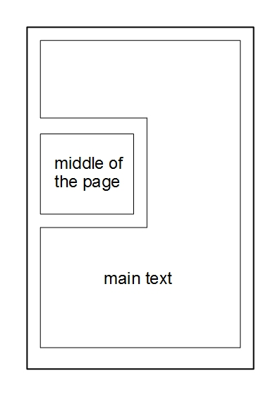- Fols. 1r-24v are written in two columns. The liniature type of fols 1r-24v is 32D2.
- Fols. 25r-242v are written as bordercatena. Liniature: 18 vertical lines for the bible verses; 64 vertical lines for the catena.
- Fols. 258v-259r contain a textcatena.
Decoration: Contains coloured capitals and decoration.
Written in the 10th or 11th century.
Bibliography
Richard, Marcel, Asterii Sophistae Commentariorum in Psalmos quae supersunt. Accedunt aliquot homiliae anonymae, Osloae 1956, 249-273 (= Symbolae Osloenses Fasc. Supplet. 16).
de Montfaucon, Bernard, Τοῦ ἐν ἁγίοις Πατρὸς ἡμῶν Ἀθανασίου ἀρχιεπ. Ἀλεξανδρείας τὰ εὑρισκόμενα πάντα. Sancti Patris nostri Athanasii archiep. Alexandrini opera omnia quæ extant vel quæ ejus nomine circumferuntur. 1.2, Paris 1698, 1009-1239.
de Montfaucon, Bernard, Collectio nova Patrum et Scriptorum Græcorum, Eusebii Cæsariensis. Athanasii, & Cosmæ Ægyptii. 2, Paris 1706, 63-101. Reprint in: Migne, Jean-Paul, PG 27:60-546, Paris, 1857.
Maurists, N.N., Homiliae super Psalmos., Paris 1857, 209-494 (= PG 29).
Aubert, Jean, Cyrilli Alexandriæ archiepiscopi opera in VI. tomos tributa. 1, Paris 1638. Reprint in: Migne, Jean-Paul, PG 69:717-1273, Paris 1864.
Olivier, Jean-Marie, Diodori Tarsensis Commentarii in Psalmos. 1. Commentarii in Psalmos I–L quorum editionem principem curavit J.-M. Olivier, Turnhout / Leuven 1980 (= Corpus Christianorum, Series Graeca 6).
Mühlenberg, Ekkehard, Psalmenkommentare aus der Katenenüberlieferung. 1, Berlin / New York 1975, 121-375 (= Patristische Texte und Studien 15).
Bandt, Cordula, Eusebius, Periochae, in: Bandt, Cordula, Risch, Franz Xaver, Villani, Barbara, Die Prologtexte zu den Psalmen von Origenes und Eusebius., Berlin / Boston 2019, 128-140 (= Texte und Untersuchungen zur Geschichte der altchristlichen Literatur 183).
Villani, Barbara, Eusebii fragmenta in Psalmos 1-50, forthcoming, 72-441 (= PG 23).
Dorival, Gilles, Fragments of Uncertain Origin from Cod. Vat. gr. 1422. Les chaînes exégétiques grecques sur les Psaumes. Contribution a l’étude d’une forme littéraire. 4, Leuven 1995 (= Spicilegium Sacrum Lovaniense 46).
Antonelli, Niccolò M., Τοῦ ἐν ἁγίοις Πατρὸς ἡμῶν Ἀθανασίου ἀρχιεπισκόπου Ἀλεξανδρίας Ἑρμηνεία τῶν Ψαλμῶν ἢ Περὶ ἐπιγραφῆς Ψαλμῶν· Sancti Patris nostri Athanasii archiepiscopi Alexandriæ Interpretatio Psalmorum sive De titulis Psalmorum, Rome 1746. Reprint in: Migne, Jean-Paul, PG 27:649–1344, Paris, 1857
Jacić, Vatroslav, Supplementum Psalterii Bononiensis. Incerti auctoris explanatio Psalmorum Graeca ad fidem codicum, Vindobonae 1917.
Cordier, Balthasar, Expositio Patrum Græcorum in Psalmos. Codicibus ἀνεκδότοις concinnata; in Paraphrasin, Commentarium & Catenam digesta. Latinitate donata. 3 vols., Antwerp 1643-1646. Reprint in: Migne, Jean-Paul, PG 93:1180–1340, Paris
Delarue, Charles Vincent, Ὠριγένους τὰ εὑρισκόμενα πάντα. Origenis opera omnia quæ græce vel latine tantum exstant et ejus nomine circumferuntur, Ex Variis Editionibus, & Codicibus manu exaratis. 2., Paris 1733. Reprint in: Migne, Jean Paul, PG:12 1053–1685, Paris, 1857
Pitra, Jean-Baptiste, Analecta Sacra Spicilegio Solesmensi parata. 2., 1884 (= Patres antenicaeni, typis Tusculanis).
Pitra, Jean-Baptiste, Analecta Sacra Spicilegio Solesmensi parata. 3., Veneto 1883 (= Patres antenicaeni; e typographeo Veneto).
Schulze, Johann Ludwig, Τοῦ μακαρίου Θεοδωρήτου εἰς τοὺς Ψαλμοὺς Ἑρμηνεία. B. Theodoreti Interpretatio Psalmorum. Ex recensione Iac. Sirmondi graece et latine seorsim edidit, Graeca e codicibus locupletavit, versionem Latinam recognovit, et variantes lectiones adiecit, Halle 1769. Reprint in: Migne, Jean-Paul, PG 80:857–1997, Paris, 1860
Richard, Marcel, Asterii Sophistae Commentariorum in Psalmos quae supersunt. Accedunt aliquot homiliae anonymae, Oslae 1956, 1–239 (= Symbolae Osloenses Fasc. Supplet. 16).
Vian, Giovanni Maria, Testi inediti dal Commento ai Salmi di Atanasio, Roma 1978 (= Studia ephemeridis Augustinianum 14).
Garnier, Julian, Maran, Prudent, Faverolles, François, Τοῦ ἐν ἁγίοις Πατρὸς ἡμῶν Βασιλείου, ἀρχιεπισκόπου Καισαρείας Καππαδοκίας, τὰ εὑρισκόμενα πάντα. Sancti Patris nostri Basilii, Cæsareæ Cappadociæ archiepiscopi, opera omnia. 1, Paris 1721, 90–204. Reprint in: Migne, Jean-Paul, PG 29:209–493, Paris, 1857.
Mai, Angelo, Novae Patrum bibliothecae tomus tertius continens S. Cyrilli Alexandrini Commentarios in IV. Pauli epistolas et in Psalmos cum eiusden Cyrilli et aliorum Patrum fragmentis aliquot minoribus ex Vaticanis praesertim codicibus, Roma 1845, 143-433. Reprint in: Migne, Jean-Paul, PG 69;717–1273, Paris, 1864.
Ferrari Toniolo, Chiara, Cyrilliana in Psalmos. I frammenti del Commento ai Salmi di Cirillo di Alessandria nel codice Laudiano greco 42, Catania 2000 (= Saggi e testi classici, cristiani e medievali 14).
McDonough, James, Gregorii Nysseni In inscriptiones Psalmorum In sextum Psalmum In Ecclesiasten homiliae, Leiden 1962, 24–175 (= Gregorii Nysseni opera. 5).
Jagić, Vatroslav, Supplementum Psalterii Bononiensis. Incerti auctoris explanatio Psalmorum Graeca ad fidem codicum, Vienna 1917.
Field, Fridericus, Origenis Hexaplorum quae supersunt; sive veterum interpretum Graecorum in totum Vetus Testamentum fragmenta. 2 (Jobus – Malachias. Auctarium et indices), Oxford 1875.
Morin, Germain, Sancti Hieronymi presbyteri tractatus sive homiliae in Psalmos quattuordecim … Accedunt eiusdem sancti Hieronymi in Esaiam tractatus duo et Graeca in Psalmos fragmenta …, Maredsous/Oxford 1903, 122–128 (= Anecdota Maredsolana 3.3).
de Montfaucon, Bernard, Τοῦ ἐν ἁγίοις Πατρὸς ἡμῶν Ἰωάννου ἀρχιεπ. Κωνσταντινουπόλεως τοῦ Χρυσοστόμου τὰ εὑρισκόμενα πάντα. Sancti Patris nostri Joannis Chrysostomi archiepiscopi Constantinopolitani opera omnia quæ exstant. 5, Paris 1724, 6–538. Reprint in: Migne, Jean-Paul, PG 55:39–498, Paris, 1862.
Bandt, Cordula, Risch, Franz Xaver, Villani, Barbara, Die Prologtexte zu den Psalmen von Origenes und Eusebius, Berlin / Boston 2019, 10–26 (= Texte und Untersuchungen zur Geschichte der altchristlichen Literatur 183).
Bandt, Cordula, Risch, Franz Xaver, Villani, Barbara, Die Prologtexte zu den Psalmen von Origenes und Eusebius, Berlin / Boston 2019, 66–68 (= Texte und Untersuchungen zur Geschichte der altchristlichen Literatur 183).
Pitra, Jean-Baptiste, Analecta sacra spicilegio Solesmensi parata. 2, Tusculum 1884, 444–483 (= Patres antenicaeni).
Pitra, Jean-Baptiste, Analecta sacra spicilegio Solesmensi parata. 3, Venice 1883, 1–364 521–522 (= Patres antenicaeni).
Devreesse, Robert, Les anciens commentateurs grecs des Psaumes, Città del Vaticano 1970, 7–88 (= Patres antenicaeni).
Goffinet, Émile, Recherches sur quelques fragments du Commentaire d’Origène sur le premier Psaume, 1963, 154–163 (= Patres antenicaeni).
De Montfaucon, Bernard, Εὐσεβίου τοῦ Παμφίλου ἐπισκόπου Καισαρείας, Ὑπομνήματα εἰς τοὺς Ψαλμούς. Eusebii Pamphili Cæsariensis episcopi Commentarii in Psalmos, Paris 1707 (= Collectio nova Patrum et Scriptorum Græcorum, Eusebii Cæsariensis, Athanasii, & Cosmæ Ægyptii. 1). Reprint in: Migne, Jean-Paul, PG 23:66–1396, Paris, 1857.
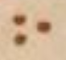GREEK PUNCTUATION THREE DOTS
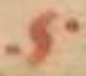LINKING SIGN ONE
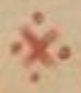LINKING SIGN TWO
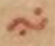LINKING SIGN THREE
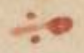LINKING SIGN FOUR
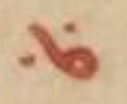LINKING SIGN FIVE
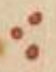LINKING SIGN SIX
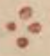LINKING SIGN SEVEN
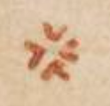LINKING SIGN EIGHT
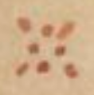LINKING SIGN NINE
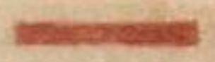HORIZONTAL LINE
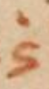Abbreviation for καὶ
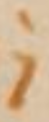Abbreviation for δέ
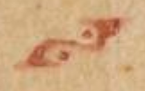DIVISION SIGN ONE
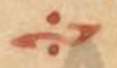DIVISION SIGN TWO
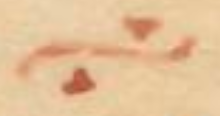DIVISION SIGN THREE
The manuscript has been fully transcribed only for the first two psalms. Afterwards only the commentaryfragments are given.
The punctuation has been simplified. Only codepoints 0387 (hex) "GREEK ANO TELEIA", 00B7 (hex) "MIDDLE DOT", 2022 (hex) "BULLET", 205D (hex) "TRICOLON" and 003A (hex) "COLON" are used in the transcription.
"Auszeichnungsmajuskeln" are ignored.
[main text] [hypothesis]
(1) [= Eusebius, Perioche in Ps 1 (Bandt) - paraphrase] [= Basilius, hom. in Ps 1 (PG 29, 216 B5–7 in Ps 1,1a) - paraphrase] [= fons ignotus (ed. Dorival IV 366)][main text] [hypothesis]
(19) [= Hesychius, Hypothesis in Ps 2 (Antonelli) - quotation (continued)]Lemma: Ps 3,1
Attribution: ὑπόθεσις τοῦ Γ´ ψαλμοῦ·
Athanasius, schol. in Ps 3,1
Ἰστέον δὲ ὅτι ἅπας ὁ ψαλμὸς ἀναφορὰν ἔχει εἰς τὴν ἀνθρωπίνην φύσιν· ἁμαρτήσασαν καὶ διὰ τοῦτο παραδιδομένην τοῖς νοητοῖς ἐχθροῖς· βοῶσαν τὲ ἐν θλίψει καὶ ἐπακουσθεῖσαν παρὰ τοῦ θεοῦ· καὶ μὴν καὶ σωθεῖσαν διὰ τὸ ἀναστῆναι τὸν θεὸν ἐκ νεκρῶν δηλονότι· αὐτὸς γὰρ ἠλευθέρωσεν ἡμᾶς ἐκ τῶν τοῦ ἄδου δεσμῶν τῶι οἰκείω θανάτω·
Lemma: Ps 3,3
Attribution: τοῦ αυτ(οῦ)
Athanasius, exp. in Ps 3,2b–3
Ὁ θεὸς φη(σὶν) αὐτοῦ οὐ σώσει αὐτὸν· εἰς γὰρ μόνην τὴν ἁμαρτίαν ἔβλεπον ἣν ἐπεποιήκει ἀγνοοῦντες αὐτοῦ τὴν μετάνοιαν·
Lemma: Ps 3,3
Athanasius, exp. (?) in Ps 3,2b–3 - fons ignotus in Ps 2,3 (ineditum?)
Ὁ θεὸς φησὶν οὐ σώσει αὐτόν; / τοῦτο γὰρ ποιοῦσιν οἱ τοῖς κακοῖς ἐπιχαίροντες τοῦ δικαίου·
Lemma: Ps 3,4
Attribution: Ἀθα(νασίου)·
Athanasius, exp. in Ps 3,4
Διδάσκει ὁ λόγος ὡς ἐν ταῖς περιστάσεσιν· οὐκ ἄλλω ἢ θεῶι μόνω προϊέναι δεῖ·
Lemma: Ps 3,9
Athanasius, exp. in Ps 3,9
Σῶσον με κύριε φησὶν. εὔχομαι δὲ τοῦτο καὶ εἰς πάντα ἐπενεχθῆναι τὸν λαὸν· ἴστεον δὲ ὡς ἅπας ὁ ψαλμὸς ἀναφορὰν ἔχει εἰς τὴν ἀνθρωπίνην φύσιν· αὐτὸς γάρ ἐστιν ὁ κύριος· ὁ τὰς μύλας τῶν λεόντων συνθλάσας [Ps 57,7b] καὶ αὐτός ἐστιν ἤτοι παρ’ αὐτοῦ ἡ σωτηρία·
Lemma: Ps 4,1
Attribution: ἄλλω(ς)
Athanasius, exp. in Ps 4,1
Ἐν τῶ πρὸ τούτω ψαλμῶ μετὰ τὸ νικῆσαι τὸν πόλεμον· ἀνατίθησι τῶ νικοποιῶι θεῶι· εἴρηται δὲ καὶ ὡς ἐκ προσώπου τοῦ υἱοῦ πρὸς τὸν πατέρα·
Lemma: Ps 4,2c
Attribution: Ἀθα(νασίου)·
Athanasius, exp. in Ps 4,2c
Ἐπειδὴ εἰσηκούσθη· ἔφη ἐκ τῆς δικαιοσύνης αὐτοῦ τούτου χάριν ἐπὶ τοὺς οἰκτιρμοὺς ἀνατρέχειν τοῦ θεοῦ·
Lemma: Ps 4,3a
Athanasius, exp. in Ps 4,3
Ταῦτα ὡς πρὸς τοὺς πιστοὺς πιστεύσαντας τῶι πλήθει τοῦ στρατοῦ ἔλεγεν· τῶν δικαίων· αὕτη δὲ φη(σὶν) ἡ ἐλπὶς ματαία καὶ ψευδής ἐστιν·
Lemma: Ps 4,4
Attribution: Ἀθα(νασίου)·
Athanasius, exp. in Ps 4,4b
Χρόνος ἀντὶ χρόνου εἴληπται· ἀντὶ τοῦ εἰσήκουσε γὰρ· ἔφη τὸ εἰσακούσεται ῥῆμα·
Lemma: Ps 4,5
Attribution: Ἀθα(νασίου)·
Athanasius, exp. in Ps 4,5
Ὡς πρὸς τοὺς ἰδίους αὐτοῦ· τὰ τοιαῦτα φη(σὶν) ὡς καὶ πρὸς πάντας ἀνθρώπους· εἰ καὶ δέξησθε φη(σὶ) τὴν ὀργὴν· ἀλλ’ ἄπρακτον ἀπoφήνατε τῆ ἡσυχία κατανυγῆ [ ]· τοῦτο γάρ ἐστιν τὸ ἐν ταῖς κοῖταις ὑμῶν κατανύγητε·
Lemma: Ps 4,6
Attribution: Ἀθανα(σίου)·
Athanasius, exp. in Ps 4,6
Διδάσκει πῶς περιεσόμεθα τῶν ἐχθρῶν· πῶς δὲ, εἰ δικαιοπραγμονοῦντες· καὶ ταῦτα ὥσπερ θυσίαν ἀναπέμποντες θεῶι·
Lemma: Ps 4,7a
Athanasius, exp. in Ps 4,7a
Ταῦτα περὶ τὰς διοικήσεις τοῦ θεοῦ ὀλιγωρούντων τ ῥήματα·
Lemma: Ps 4,7b
Athanasius, exp. in Ps 4,7b
Τὸ φῶς τοῦ κυρίου ὁ Χριστός ἐστιν· ὃς καὶ διδάξας ἡμᾶς· τὰ ὄντως ἀγαθὰ· διἃ καὶ τὴν νοητὴν εὐφροσύνην ἐσχήκαμεν τὴν εἰς νοῦν καὶ καρδίαν·
Lemma: Ps 5,3c–4a
Attribution: Ἀθανα(σίου)·
Athanasius, exp. in Ps 5,4b
Μέγα ἀγωνίας καύχημα· τὸ ἐκ τῆς κοίτης αὐτῆς προΐστασθαι τῶ θεῶι· καὶ φθάνειν ἐν εὐχαριστία τὸν ἥλιον· οὕτω γάρ φη(σιν) ἐπὄψομαι τὰ θεία καὶ ἅγιά σου μυστήρια· ἃ ἡτοίμασας τοῖς ἀγαπῶσι σε·
Lemma: Ps 5,5a
Attribution: τοῦ Χρ(υσοστόμου)
Athanasius, exp. in Ps 5,5a
Διατοῦτο φησὶν εἰσακουσθήσεσθαι θαρρῶ ὅτι τῶν τοιούτων οὐκ ἐπτήδευσα οὐδέν· ὧν μεμίσηκας· ταῦτα δέ ἐστιν ἀνομία καὶ παρανομία· καὶ ψεῦδος καὶ δόλος· καὶ φθόνος καὶ πορνεία· καὶ μοιχεία καὶ κλπὴ· καὶ καταλαλιὰ καὶ ἐπιορκία καὶ πᾶν ὅτι ἕτερον τοιοῦτον·
Lemma: Ps 5,8a
Attribution: Ἀθα(νασίου)·
Athanasius, exp. in Ps 5,8
Τὴν ἐπ᾿ οὐράνιον ἱερουσαλὴμ λέγει· τὴν πρωτοτόκων μητέρα:
Lemma: Ps 5,9a1
Attribution: Ἀρσε(νίου)
Arsenius (?), fr. in Ps. 5,9a (ineditum?) – Athanasius, exp. (?) in Ps 5,9a2–b
Ἡ δικαιοσύνη τοῦ πατρὸς ὁ υἱὸς· ἐφ᾿ ἃ ὁδηγηθῆναι ὁ προφήτης εὔχεται· / πολλοὶ γὰρ οἱ ἐπιβουλεύοντες τῆ θεοφιλεῖ ψυχῆ τὴν κατὰ θεὸν αὐτῆς προκοπὴν διαβασκαίνοντες:
Lemma: Ps 5,11b–c
Attribution: Ἀθανασίου·
Athanasius, exp. in Ps 5,11b
Ταῦτα φησὶν τὰ διαβούλια· ἃ κατ’εμοῦ ποιοῦνται τῆ κατὰ θεόν μου προκοπῆ φθονούμενοι:
Lemma: Ps 5,12c
Athanasius, exp. in Ps 5,13b
στέφανον ἡμῖν τῶν πόνων χαρίσεται· καθάπερ ὅπλω τινὶ περιφράττων ἡμᾶς:
Lemma: Ps 6,3
Attribution: Ἀθανα(σίου)
Athanasius, exp. in Ps 6,3b–4a
Αἱ τῆς ψυχῆς δηλονότι δυνάμεις:
Lemma: Ps 6,5
Attribution: Ἀθα(νασίου)
Athanasius, exp. in Ps 6,5b
Ἅπαν γὰρ τῶι τῆς μετανοίας ἐλέω. ἀναθετέον θεῶι:
Lemma: Ps 6,9
Attribution: Ἀθα(νασίου)
Athanasius, exp. in Ps 6,9a
Ὡς ἤδη εἰσακουσθεὶς· μακρὸν κατὰ τῶν ἐχθρῶν συνερεῖ λόγον:
Lemma: Ps 7,1
Attribution: Ἀθα(νασίου)
Athanasius, exp. in Ps 6,1
Καὶ τίς ἂν εἴη ἡ ὀγδόη; ἡ τοῦ Χριστοῦ ἀναστάσιμος ἡμέρα· καθἣν τῶν ἡμετέρων κόπων ἀποληψόμεθα τοὺς καρποὺς· τῶν ἐχθρῶν δηλαδὴ ἀποστρεφομένων εἰς τὰ ὀπίσω μεταισχύνης:
Lemma: Ps 7,2a–b1
Attribution: Ἀθανα(σίου)
Athanasius, exp. in Ps 7,2–3
Ἐπειδὴ ἀνθρώπω φη(σὶ) περὶ τῆς σωτηρίας οὐ θαρρῶ· εἰ καὶ τοῦ Χουσὶ οἱ λόγοι καλοὶ· σῶσόν με καὶ ἐκ τῶν παρόντων μὲν ἐχθρῶν. μάλιστα δὲ`· ἀπὸ τοῦ ἐφεδρεύοντος νοητοῦ λέοντος τῆι ἡμετέρα ψυχή·
Lemma: Ps 7,2a–b1
Athanasius, exp. in Ps 7,4–5
Τὸ ἀμνησίκακον προβλέψεται ἐκκαλούμενος δι’ αὐτοῦ εἰς ἔλεον τὸν θεόν: –
Lemma: Ps 7,5b
Athanasius, exp. in Ps 7,6
Εἰ καὶ τὸ καὶ τὸ ἐποίησα μὴ ἐπελευθερωθείην τῆς ἁμαρτίας τοῦ θανάτου:
Lemma: Ps 7,6
Attribution: Ἀθανα(σίου)
Athanasius, exp. in Ps 7,6
Ὃ λέγει τοιοῦτόν ἐστιν· ἐμπέσω εἰς τὰς χεῖρας τοῦ διαβόλου· εἰ τοιοῦτόν τι ἐποίησα τῶν προλεχθέντων:
Lemma: Ps 7,7a–b
Attribution: Ἀθα(νασίου)
Athanasius, exp. in Ps 7,7b
Τουτέστιν ἐν τοῖς κραταιοῖς τῶν ἐχθρῶν σου· πέρατα γὰρ τὰ ἄκρα δηλοῖ:
Lemma: Ps 7,7c
Attribution: Ἀθα(νασίου)
Athanasius, exp. in Ps 7,8b–9a
Ὑπὲρ τῆς τοιαύτης συναγωγῆς δηλονότι· τὸ δὲ εἰς ὕψος· τὸν τίμιον καὶ ζωοποιὸν αἰνίττεται σταυρὸν εἰς ὃν ἀνήνεγκεν ἡμῶν τὰς ἀνομίας καὶ ἁμαρτίας· καὶ τὴν εἰς οὐρανοὺς ἀναφοίτησιν ἡμῖν ἐχαρίσατο· ὡς φιλάνθρωπος· ἐπορεύθη γὰρ ἐμφανισθῆναι τῶι προσώπω τοῦ πατρὸς περὶ ἡμῶν· καὶ ἣν ἡμῶν εἴληφε σάρκα ἀναβιβάσας ἐν τοῖς οὐρανοῖς· ὑπερεδόξασεν αὐτήν·
Lemma: Ps 7,10c
Athanasius, exp. in Ps 7,10c–11
Ἐπειδὴ οἶδας φη(σὶ) τῆς ἡμετέρας τὰ νοήματα. τούτου χάριν τὴν βοήθειαν ἐξαιτῶ:
Lemma: Ps 7,10c
Attribution: Ἀθανασίου·
Athanasius, exp. in Ps 7,10c–11
Οἶδας φησὶν τῆς ἡμετέρας καρδίας τὰ νοήματα. τούτου χάριν τὴν βοήθειαν ἐξαιτῶ:
Lemma: Ps 7,12
Attribution: Ἀθανα(σίου)
Athanasius, exp. in Ps 7,12–14a
Σαφῶς διὰ τῶν τοιούτων παρίστησι τὸ μακρόθυμον τοῦ θεοῦ· ἀναβολὴν μὲν ἔχων τῆς ἡμετέρας κολάσεως. οὐ μὴν παντελῶς γνώμην:
Lemma: Ps 7,14b
Attribution: Ἀθα(νασίου)
Athanasius, exp. in Ps 7,14b
Βέλη μὲν τὴν τιμωρίαν φη(σὶ)· καιομένοις δὲ` τοῖς ἀξίοις πυρός:
Lemma: Ps 7,16
Athanasius, exp. in Ps 7,16–17a
Θάνατον κατασκευάσας κατὰ τοῦ σωτῆρος θανάτω παραδέδοται:
Lemma: Ps 8,1
Attribution: Ἀθανα(σίου)
Athanasius, exp. in Ps 8,1
Πάλαι μὲν ἐν τῆ νομικῆ λατρεία. ἓν ἦν προλήνιον· τὸ θυσιαστήριον δηλονότι τῶι ἐν τῶι νεῶι· μετὰ δὲ τὴν τῶν ἐθνῶν κλῆσιν· πολλαὶ ληνοὶ· αὗται δἂν εἶεν· αἱ ἐκκλησίαι τῶν πιστῶν· αἱ ἐν σιὼν τῶν κατορθούντων ἐν θεοσεβεία. τῶν δεχομένων τοὺς ἀειθαλεῖς καρπούς:
Lemma: Ps 8,2b
Athanasius, exp. in Ps 8,2
Ἐκπλήττεται τὴν εἰς ἀνθρώπους γνῶσιν δοθεῖσαν τοῦ ὀνόματος τοῦ θεοῦ· οὐκ ἔστιν γὰρ μόνοις τοῖς ἐν τῆ ἰουδαῖα γνωστὸς ὁ θεός:
Lemma: Ps 8,3a
Athanasius, exp. in Ps 8,3a
Τῶν κατὰ θεὸν νηπιαζόντων τῆ κακία· ταῦτα δὲ σαφῶς καὶ ἐν τοῖς εὐαγγελίοις ἀναγέγραπται· ὅτι τοὺς παῖδας οἱ φαρισαῖοι ἐπεστόμιζον εὐλογοῦντες [ας ] αὐτόν:
Lemma: Ps 8,3b–c
Attribution: Ἀθα(νασίου)
Athanasius, exp. in Ps 8,3c
Ἐχθρὸν καὶ ἐκδικητὴν τὸν διάβολον φη(σίν)· ἐπειδὴ μετὰ τὸ ἀναγκάσαι πληρῶσαι τὴν ἁμαρτίαν. τιμωρεῖται τοὺς ἁμαρτάνοντας· τὸ μέγεθος αὐτοῖς τοῦ ἁμαρτήματος ἐν ὀφθαλμοῖς παριστῶν:
Lemma: Ps 8,5a
Athanasius, exp. in Ps 8,5–7
Ταῦτα τοῦ Παῦλου σαφῶς ἐξειληφότος· ἀρκεῖσθαι τῆ ἐκδόσει χρή:
Lemma: Ps 8,9
Attribution: ὡριγέ(νους)
Athanasius, exp. in Ps 8,9a
Τοὺς ἐπηρμένους κατὰ τὸν βίον· καὶ τοὺς ὑψηλὰ φρονοῦντας:
Lemma: Ps 8,8a
Attribution: Ἀθα(νασίου)
Athanasius, exp. in Ps 8,8a
Πρόβατα καὶ βόας τοὺς ἐξ ἰσραὴλ πιστεύοντας αἰνίττεται:
Lemma: Ps 8,8a
Attribution: τοῦ αὐτοῦ
Athanasius, exp. in Ps 8,5–7
Ταῦτα τοῦ Παῦλου σαφῶς ἐπὶ τὸν σωτῆρα ἡμῶν ἐξειληφότος· ἀρκεῖσθαι τῆ ἐκδόσει χρή:
Lemma: Ps 8,10
Athanasius, exp. in Ps 8,10
Ἀναδιπλασιάζει τὸ θαῦμα. ἐκπληττόμενος ἐπὶ τῆ γενομένη τῶν ἀνθρώπων θεογνωσία:
Lemma: Ps 9,1
Athanasius, exp. in Ps 9,1
Διὰ τούτου τοῦ ψαλμοῦ τὰ κρυφίως πεπραγμένα τῶ σωτῆρι δηλοῖ· πολλὰ δὲ ἦν αὐτοῦ τὰ κρυφίως πραττόμενα· ἤτοι ἡ ἐκ παρθένου διὰ πνεύματος ἁγίου κατὰ σάρκα γέννησις· αἵ τε παράδοξοι καὶ θαυματουργοὶ δύ [υ ]νάμεις· ὅ τε θάνατος αὐτοῦ· καὶ ἡ εἰς ἅιδου κάθοδος· καὶ ἡ ἐκ νεκρῶν ἀναβίωσις· ταῦτα γὰρ πάντα· κρυφίως αὐτῶι πέπρακται· ἀπέκρυψεν γὰρ αὐτὰ τοὺς ἄρχοντας τοῦ κόσμου τούτου: –
Lemma: Ps 9,2
Attribution: Ἀθα(νασίου)
Athanasius, exp. in Ps 9,2–4a
Ἐπὶ τίσιν ἡ ἐξομολόγησις δηλοῖ· ἐχθρὸν δὲ αὐτοῦ τὸν θάνατον εἶναι φη(σὶ) τὸν εἰς τὰ ὀπίσω ἀποστρεφόμενον τουτέστιν εἰς τὸ μὴ εἶναι:
Lemma: Ps 9,4
Athanasius, exp. in Ps 9,4b
Ἐπειδἄν φη(σιν) ἀποστραφῆ εἰς τὰ ὀπίσω ὁ θάνατος· τότε δὴ καὶ πᾶσα δύναμις ἀντικειμένη καταργηθήσεται· εἰ γὰρ ὁ ἐχθρὸς ὁ ἔσχατος καταργεῖται· ὁ θάνατος δηλονότι προαναιρεθεισῶν τῶν ἀντικειμένων δυνάμεων:
Lemma: Ps 9,5b
Athanasius, exp. in Ps 9,5b
Τὸ ἐκάθισας τὴν εἰς τὸ κρίνειν ἐπισκοπὴν δηλοῖ τοῦ θεοῦ:
This Expositio is found in section Δ´ (in Ps 9,5). Its afference to Ps 9,5b is specified by a linking sign.
Lemma: Ps 9,7a
Athanasius, exp. in Ps 9,7a1
Ῥομφαίας τοῦ διαβόλου· τὰς ἀντικειμένας δυνάμεις δηλοῖ· δι’ ὧν ἦν ἰσχυρός:
Lemma: Ps 9,7a
Athanasius, exp. in Ps 9,7a2 - Hesychius, comm. brevis in Ps 9,7a1 et in Ps 9,7a2 (12,7–9.11–12 Jagić) - Athanasius, exp. in Ps 9,7a2
Καὶ ποίας ἢ ταύτας περὶ ὧν ἀλλαχοῦ· ὅτι ἔθηκας πόλεις ὡς χῶμα· [; ] πόλεις τὲ ὀχυρὰς τοῦ πεσεῖν αὐτῶν τὰ θεμέλια· τὰς ἀντικειμένας φη(σὶ) δυνάμεις· / ἀφ’ οὗ γὰρ ὁ Χριστὸς ἐφάνη· κατηργήθησαν τοῦ διαβόλου αἱ δυνάμεις· καὶ τὰ τοῦ θανάτου καὶ τοῦ ἅδου βασίλεια· / εἰσὶ δὲ αὗται αἱ ἀντικείμεναι δυνάμεις· αἳ ὥσπερ πόλεις ὀχυραὶ τετειχισμέναι τοὺς ὑπ᾿ αὐτῶν ἀλόντας τῆ ἀπάτη, συλλαβοῦσαι ἔσχον:
Lemma: Ps 9,12b
Attribution: Ἀθα(νασίου)
Athanasius, exp. in Ps 9,12b et in Ps 9,13a
Ταῦτα ὡς πρὸς τοὺς ἀποστόλους· καὶ τοὺς τῶν εὐἀγγελικῶν κήρυκας φη(σίν)• αἵματα φη(σὶ) τὰ ὑπὲρ αὐτοῦ ἐκκεχυμένα ἐκζητήσει ἐπὶ τὸ ἐκδικη(σεως) ἀξιῶσαι:
Lemma: Ps 9,13b
Athanasius, exp. in Ps 9,13b
Πένητα φη(σὶ) πάλιν τοὺς δι’ αὐτοὺς πτωχεύσαντας καὶ διὰ παντὸς τὰς πρὸς αὐτὸν ἱκετείας ἐποιοῦντο· ἐκδίκησιν τὴν καταὐτῶν γινομένην· ἀδικίας παρὰ τῶν δαιμόνων αἰτοῦντες:
Lemma: Ps 9,15b
Attribution: Ἀθα(νασίου)
Athanasius, exp. in Ps 9,14b–15
Διατοῦτο ἐγείρει σε ἐκ γῆς ταπεινώσεως· ἵνα τῆι ἐπουρανίωι συγχορευ{σά}σης σιών:
Lemma: Ps 9,20a
Athanasius, exp. in Ps 9,20a
Ἐπιλάμψειν τοῖς ἐπὶ τῆς γῆς εὔχεται τὸν μονογενῆ· ὅπως ὁ ὑψηλόφρων ἐκεῖνος διάβολος ὃν καὶ ἄνθρωπον ἐπὶ τοῦ παρόντος καλεῖ ἐπὶ πλεῖον μὴ ἐπαίρει τὴν ὀφρύν: –
Lemma: Ps 9,21a
Athanasius, exp. in Ps 9,21a
Καὶ τίς ὁ νομοθέτης ἢ ὁ τὸν τῆς διακαιοσύνης νόμον ἡμῖν εἰσηγούμενος:
Lemma: Ps 9,22
Athanasius, exp. in Ps 9,22a
Ἐπιταχύναι τὴν μικρὸν ὕστερον γενησομένην τῶν ἐθνῶν κλῆσιν εὔχεται· τοῦτο δὲ αὐτοῖς πεποίηκεν ἡ τοῦ διαβόλου ὑπεροψία:
Lemma: Ps 9,22
Athanasius, exp. in Ps 9,23a
Ἡ ὑπεροψία φη(σὶ) τοῦ πονηροῦ· πύρωσις τῶ πτωχῶ σου λαῶ γίνεται:
Lemma: Ps 9,23b
Attribution: Ἀθα(νασίου)
Athanasius, exp. in Ps 9,23b
Ἀντὶ τοῦ συλληφθήσονται· σὺ γὰρ εἶ ὁ δρασσόμενος τοὺς σοφοὺς ἐν τῆ πανουργία αὐτῶν: [1Cor 3,19]
Lemma: Ps 9,24
Attribution: Ἀθα(νασίου)
Athanasius, exp. in Ps 9,24
Τοσαύτη φη(σὶ) γέγονεν ἡ ἀλεξικακία· ὡς καὶ διὰ τὸ ἀτιμωρήτους μένειν τοὺς ἀσεβεῖς· λοιπὸν καὶ παρά τισι τῶν ἀνοητοτέρων· ἀπόδεκτον αὐτοῖς εἶναι τὸν βίον:
Lemma: Ps 9,25a–b
Attribution: Ἀθανα(σίου):
Athanasius, exp. in Ps 9,25b
Καθυποστιγμὴν ἡ ἀνάγνωσις· ἵν ἦ οὐκ ἐκζητήσει φη(σὶν) ὁ θεὸς· καὶ ἀποδώσει αὐτῶι κατὰ τὴν ὀργὴν· ἣν ἑαυτῶ ἐθησαύρισεν ἐν ἡμέρα ὀργῆς:
Lemma: Ps 9,25a–b
Attribution: Ἀθανα(σίου):
Athanasius, exp. in Ps 9,25a
Παρώξυνε μὲν χλευάζων τοὺς περὶ προνοίας· καὶ τῆς κρίσεως αὐτοῦ λόγους· τοῦτο δὲ συνάπτεται τῶ [ὸ ] κατὰ τὸ πλῆθος τῆς ὀργῆς αὐτοῦ. οὐκ ἐκζητήσει· ἵνα ἠ τὸ ὅλον· αὐτὸς παρώξυνε φη(σὶ) τὸν κύριον ὁ ἁμαρτωλὸς· πλῆθος ὀργῆς αὐτοῦ θησαυρίζων· τὸ γὰρ αὐτοῦ· ἐπὶ τοῦ παροξύναντος ληπτέον· εἶτα τὸ ἐπιφερόμενον τούτο{} τὸ οὐκ ἐκζητήσει καθὑποστιγμὴν ἀναγνωστέον· ἵνα ἦ τὸ νοούμενον οὕτως· ἄρα ἦν ὁ μὲν` παροξύνει τὸν θεὸν· καίτοι πλῆθος αὐτῶ ἐκκαίων ὀργῆς· ὁ δὲ`. οὐκ ἐκζητήσει:
Lemma: Ps 9,25c–26a
Athanasius, exp. (?) in Ps 9,26b
Ὁ γὰρ στίχος ὅλος. μὴ ἐπιστάμενος ὅτι ἔστιν ἀνθρώπου γένος· οὐδὲ ὅτι κριτής ἐστιν οἶδεν:
Lemma: Ps 9,26b
Attribution: Ἀθα(νασίου)
Athanasius, exp. in Ps 9,26a
Ἀρχὴ πάσης πονηρᾶς πράξεως· τὸ μὴ λογίζεσθαι κριτὴν τὸν θεόν:
Lemma: Ps 9,26c
Athanasius, exp. in Ps 9,26c
Ὅμοιον τὸ [ῷ, ] τὴν οἰκουμένην ὅλην καταλήψομαι τῆι χειρὶ ὡς νοσσιάν:
Lemma: Ps 9,28
Attribution: Ἀθανασίου·
Athanasius, exp. in Ps 9,28 et in Ps 9,29
Παράμονον φησὶν ἕξειν τὴν εὐημερίαν λελόγισται· διὸ καὶ πικρίας καὶ δόλου τὸ στόμα πεπλήρωται· καὶ μὴν ἐνεδρεύει πτωχοὺς πρὸς τὸ ἀποκτεῖναι διὰ τῶν ἰδίων παγίδων· τὸ μετὰ πλουσίων τί ἂν ἕτερον νοηθείη· ἢ τῶν πλουτούντων ἐν κακοῖς· οὗτοι γὰρ τῶι διαβόλωι κατὰ τῶν πτωχῶν τῶι πατρὶ αὐτῶν συμπράττουσιν:
Lemma: Ps 9,30c–31a
Athanasius, exp. (?) in Ps 9,30c–31a
Παγίδα συνεπήξατο Χριστῶι· τὸν θάνατον ὁ διάβολος· ἀλλ᾿ ἐν αὐτῆ τεταπείνωται τῆι ὀκεία παγίδι· λέλυται γὰρ ὁ θάνατος ἐν θανάτω τοῦ Χριστοῦ:
Lemma: Ps 9,31b
Attribution: Ἀθα(νασίου)
Athanasius, exp. in Ps 9,31b
Ὅτἂν εἴπη νενίκηκα· τότε πεσὼν αἰσχύνεται:
Lemma: Ps 9,33
Attribution: Ἀθανα(σίου):
Athanasius, exp. in Ps 9,32b–33a et in Ps 9,33b–34
Εὔχεται τὴν ἀνοχὴν τοῦ θεοῦ καὶ τὴν χρηστότητα κινῆσαι· / μὴ ὑψουμένης γὰρ ἐπὶ τῆ μωρία τῶν ἀσεβῶν τῆς || χειρὸς τοῦ θεοῦ, προπετέστεροι γίνονται:
Lemma: Ps 9,35a–b
Attribution: Ἀθανα(σίου):
Athanasius, exp. in Ps 9,35a
Σὺ κύριε πάντα φη(σὶ) γινώσκεις· καὶ οὐδέν σε τῶν πραττομένων λανθάνει· οὐδὲ τῶν ἐν διανοία καὶ λογισμῶι· ἀλλὰ καὶ τοὺς πόνους τῶν ἀνθρώπων καὶ τοὺς θυμοὺς καὶ τοὺς παροργισμοὺς. οἶδας ἀκριβῶς· ἐπειδὴ πάντων τοὺς λογισμοὺς κατανοεῖς· καὶ σὺ εἶ ὁ ἑτάζων καρδίας καὶ νεφροὺς. καὶ ταῦτα πάντα ἐφορῶν μακροθυμεῖς εἰδὼς ὅτι ὑπὸ τὰς σὰς χεῖρας οἱ πάντες τυγχάνουσι καὶ οὐκ ἔστιν ἐκτός σου τινὰ διαδράναι: –
Lemma: Ps 9,35a–b
Athanasius, exp. in Ps 9,35b
Εἰς τὴν σὴν βοήθειαν ἐφορᾶ· τουτέστι τὴν παρὰ σοῦ μένει βοήθειαν:
Lemma: Ps 9,36b
Athanasius, exp. in Ps 9,36b
Διαυτὴν τὴν ἁμαρτίαν οὐ μὴ εὑρεθῆ· τὸ δὲ ὅλον οὕτως· ἐὰν φη(σὶν) ἐκζητήσης τὴν ἁμαρτίαν τοῦ πονηροῦ· οὐ μὴ εὑρεθῆ· τουτέστιν· ἀπολεῖται ὁ πονηρὸς δι’ αὐτήν:
Lemma: Ps 10,2
Athanasius, exp. in Ps 10,2a–b et in Ps 10,2c
Τούτοις τοῖς λόγοις φεύγειν ἐρέθιζον· φάσκοντες εἰ μὴ φεύγοι· κατατοξεύειν αὐτῶ [ο ]ν τοὺς ἁμαρτωλοὺς / ἐν σκοτομήνη ἀντὶ τοῦ λεληθότος· τοιαῦτα γὰρ τῶν ἐχθρῶν τὰ τοξεύματα:
Lemma: Ps 10,3
Attribution: Ἀθα(νασίου)
Athanasius, exp. in Ps 10,3a
Κατήνεγκε φη(σὶν) ὁ ἐχθρὸς τὸν ἄνθρωπον εἰς φθορὰν καίτοι ἐπὶ ἀφθαρσία κατηρτισμένον:
Lemma: Ps 10,3
Athanasius, exp. in Ps 10,3b–4b et in Ps 10,4c et in Ps 10,4d
Εἰ καὶ οἱ ἐχθροί φη(σι) ταῦτα ἔδρασαν· ἀλλ’ ὁ κύριος ὁ ναὸν ἔχων τὸν οὐρανὸν· ἐξέτασιν τῶν δικαίων καὶ τῶν ἀσεβῶν ποιούμενος· τοῖς μὲν` ἀπονέμει τὰ ἀγαθὰ· τοὺς δὲ ταῖς αἰωνίοις παραπέμπει κολάσεσιν· / ὀφθαλμοὺς δὲ· τὴν εὐεργετικὴν ἐπισκοπὴν δηλοῖ· / βλέφαρα δὲ τὴν κριτικὴν αὐτοῦ πρόνοιαν· καὶ τῶν πραγμάτων ἐξεταστικήν:
Ps 11: Type XV (= Vat. gr. 1422 and Paris. gr. 146) has on this Psalm 60 fragments. Thirteen of them are absent in Laurent. Plut. 6. 3. The latter manuscript has one fragment and one exaplaric variant of its own.
Lemma: Ps 11,1
Attribution: ὑποθ(εσις) τοῦ ΙΑ´ ψαλμ(οῦ)
Theodoretus, comm. in Ps 11,1 (PG 80,941 B7–12.B3–6)
Lemma: Ps 11,1
Attribution: υπ(ο)θ(εσις)τοῦ Χρ(υσοστόμου)
fons ignotus in Ps 11,1 (ed. Dorival IV 370, fr. 1); non habet Typus XVI
Lemma: Ps 11,1
Attribution: υπ(ο)θ(εσις)
Theodoretus, comm. in Ps 11,1 (PG 80,941 B3–12); non habet Typus XVI
Lemma: Ps 11,1
Attribution: υπ(ο)θ(εσις)
Hesychius, comm. brevis in Ps 11,1 (16–17 Jagić); non habet Typus XVI
Lemma: Ps 11,1
Athanasius, exp. in Ps 11,1; non habet Typus XVI
Εἴρηται τὰ περὶ τῆς ὀγδόης ἐν τῶ ς´ ψαλμῶι· εὔχεται δὲ ῥυσθῆναι ἐκ τῆς γενεᾶς τῆς πονηρᾶς· αὐτὴ δὲ ἀνθεῖ ἡ γενεὰ ἡ ἐπὶ τοῦ σωτῆρος Χριστοῦ· περὶ ἧς αὐτοῖς ἔλεγεν· ἄνδρες νινευΐται ἀναστήσονται καὶ κατακρινοῦσι τὴν γενεὰν ταύτην: – [cf. Mt 12,41]
Lemma: Ps 11,2
Attribution: ὠρ(ι)γ(ένους)
Evagrius, schol. nr. α´ in Ps 11,2 (348 Rondeau – Géhin – Cassin)
This scholion contains two alternative explanations. Both type XV and type XVI (see below) offer the two explanations separately. However, type XV quotes at the end of the first explanation also the first words of the second explanation. This words, in type XVI, has been erased.
Lemma: Ps 11,3
Attribution: Ἀθανασίο[υ]
Athanasius, exp. in Ps 11,3a; iterum scripta - Hesychius, comm. brevis in Ps 11,2b (17 Jagić)
Τὰς κατὰ τοῦ σωτῆρος συνάγων ἐπιβουλὰς· / ἀφέντες γὰρ τὴν ἀλήθειαν οἱ ἰουδαῖοι ψεῦδος κατὰ τοῦ Χριστοῦ ἐπετέλεσαν:
Lemma: Ps 11,3
Athanasius, exp. in Ps 11,3b - Hesychius, schol. nr. 4 in Ps 11,3b (Antonelli; PG 27,685)
Ὅτι διδάσκαλον αὐτὸν ἀποκαλοῦντες καὶ ἀγαθὸν. ἑτέρα ἐβουλεύοντο περὶ αὐτοῦ· / ῥήματα κολακείας προφέρουσι· καὶ ἐν τῆ καρδία αὐτῶν. ἔχουσι τὴν κακίαν: –
(41v–42r)
Lemma: Ps 11,4
Iohannnes Chrys., exp. in Ps. 11 (PG 55,145, l. 61–146, l. 9; 146, l. 12–13.15–28) in Ps 11,4–5
Lemma: Ps 11,4
Athanasius, exp. in Ps 11,4–5a
Πῶς γὰρ οὐ μεγαλορήμων ἡ γλῶσσα ἐκείνη ἡ τολμῶσα τῶ κυρίω λέγειν· ἐν ποία ἐξουσία ταῦτα ποιεῖς· καὶ τίς σοι ἔδωκε τὴν ἐξουσίαν ταύτην: [Mc 11,28]
Lemma: Ps 11,5
Athanasius, exp. in Ps 11,5b
Ὡς τούτων διανοουμένων τὸ ἐξουσίαν ἔχειν πᾶν ὅ τι ἂν βούληται εἰπεῖν κατὰ τοῦ σωτῆρος Χριστοῦ:
Lemma: Ps 11,6 (ἕνεκεν [ἀπὸ LXX Rahlfs] τῆς ταλαιπωρίας)
Iohannnes Chrys., exp. in Ps. 11 (PG 55,147, l. 3.6–9.24–27) in Ps 11,6
Lemma: Ps 11,7
Iohannes Chrys., exp. in Ps. 11 (PG 55,147, l. 48–52) in Ps 11,7 - Theodoretus, comm. in Ps 11,7 (PG 80,944 C)
Lemma: Ps 11,7
Attribution: Ἀθανα(σίου)
Athanasius, exp. in Ps 11,6d
φανερὸν πᾶσι καταστήσω τὸ σωτήριον ὃ καὶ ἐξάκουστον παρασκευάσαι γενέσθαι, ἐκηρύχθη γὰρ εἰς πᾶσαν τὴν γῆν:
Lemma: Ps 11,7
Athanasius, exp. in Ps 11,7b
Ἀληθεῖς φη(σὶν) οἱ λόγοι· οἱ παρὰ τοῦ σωτῆρος ἐπηγγελμένοι· ὡς καὶ τὸ ἀργύριον πολλάκις χωνευθὲν· καθαρόν ἐστιν: –
Lemma: Ps 11,8
Attribution: Ἀθανα(σίου):
Athanasius, exp. in Ps 11,8–9a
Διατοῦτο φη(σὶν) φυλάξεις ἡμᾶς· ἐπειδὴ κυκλοῦντες κυκλοῦσιν ἡμᾶς οἱ ἀσεβεῖς ἐπιβουλεύοντες τῆι ἡμῶν σωτηρία· οὗτοι δ᾿ ἂν εἶεν αἱ ἀντικείμεναι καὶ πονηραὶ δυνάμεις:
Lemma: Ps 11,9
Attribution: Ἀθανα(σίου):
Athanasius, exp. in Ps 11,9b - Iohannes Chrys., exp. in Ps. 11 (PG 55,148, l. 22–23) in Ps 11,8–9 - Evagrius, schol. nr. δ´ in Ps 11,9b (350 Rondeau – Géhin – Cassin)
Ὕψος μὲν τὴν δύναμιν λέγει· πολυωρίαν δὲ· τὴν πολυχρονιότητα· ἵν ἦ τοιοῦτον· διὰ τῆς ἰσχύος πολυχρονιότητα καὶ αἰώνιον ζωὴν ἡμῖν δέδωκας· / ἢ ὕψος λέγει· ὅτι ὁμοίους σου ἐποίησας· ὡς ἀνθρώπωι δυνατόν· / ἢ ὅτι πολλῆς φροντίδος ἠξίωσας: –
Lemma: Ps 11,9
Attribution: ὠρ(ι)γ(ένους)
Evagrius, schol. nr. γ´ in Ps 11,9a (350,1–2 Rondeau – Géhin – Cassin); non habet Typus XVI
(42r–42v)
Lemma: Ps 11,9
Attribution: Ἀρσε(νίου)
Arsenius, fr. in Ps 11,9 (ed. Dorival IV 370, fr. 2); non habet Typus XVI
Ps 12: Type XV (= Vat. gr. 1422 and Paris. gr. 146) has on this Psalm 39 fragments. Seven of them are absent in Laurent. Plut. 6. 3. The latter manuscript has one fragment of its own.
Lemma: Ps 12,1
Attribution: ὑποθ(έσεις) τοῦ ΙΒ´ ψαλμ(οῦ)
Theodoretus, comm. in Ps 12,1 (PG 80,945 A2–9)
Lemma: Ps 12,1
Athanasius, exp. in Ps 12,1; non habet Typus XVI
Τοῦτον ἄδει τὸν ψαλμὸν ἐν μετανοία τοῦ ἁμαρτήματος γεγονὼς· ἅμα τὲ καὶ διδάσκει· πῶς δεῖ ἡμᾶς ἐν ἁμαρτίαις γενομένους προσιέναι θεῶι:
Lemma: Ps 12,1 (sic)
Athanasius, exp. in Ps 12,2a; non habet Typus XVI
Ὡς μακρᾶς οὔσης τῆς γινομένης ατῶι διὰ τὴν ἁμαρτίαν ἐν τῆ μετανοία πρὸς θεὸν παρόδ:
Lemma: Ps 12,2
Asterius, hom. 23,9 in Ps. 12 (178,7–10 Richard) in Ps 12,2a - Idem, hom. 24,1 in Ps. 12 (182,12–15 Richard) in Ps 12,2a
Lemma: Ps 12,2 (sic)
Attribution: Θεοδώ(ρου) ἀντιοχ(είας)
Theodorus Mops., fr. in Ps 12,3 (76,25–31; 77,4–6.8–11 Devreesse)
Lemma: Ps 12,3a–b
Athanasius, exp. in Ps 12,2b–3b
Ἀνιῶμαι βουλόμενος κατὰ ψυχὴν· μήπως ἄ [ἆ ]ρα ἐν τῆ ἁμαρτία ἀποθανοῦμαι· καὶ τοῦτό ἐστιν· ὃ μάλιστα τῆι ψυχῆ μου· ὀδύνας παρασκευάζει: –
Lemma: Ps 12,3a–b
Attribution: Θεοδω(ρή)τ(ου)
Theodoretus, comm. in Ps 12,3a–b (PG 80,945 B8–13 sub Ps 12,2)
Lemma: Ps 12,3a–b (sic)
Theodoretus, comm. in Ps 12,2b (PG 80,945 A15–B6 sub Ps 12,1); iterum scriptus sed fere ad verbum
Lemma: Ps 12,3c
Attribution: Ἀθα(νασίου):
Athanasius, exp. in Ps 12,3c - Hesychius, comm. magnus in Ps 12,3c (PG 93,1184 C8–11); sub auctore Hesychio in Paris. gr. 139 (f. 34v)
Εἰ γὰρ θεοσεβούντων ἡμῶν ταπεινοῦται ὁ ἐχθρὸς δηλονότι ἁμαρτανόντων ὑψοῦται· / ὕψος γὰρ τῶι σατανᾶ ἡ τῶν ἀνθρώπων ταπείνωσις· ἐπειδὴ καθάπερ ὁ θεὸς ἐν τῆ σωτηρία ὑψοῦσθαι τῆ ἡμετέρα· οὕτως ὁ διάβολος ἐν τῆι ἀπωλεία ἐπαίρεσθαι λέγεται:
Lemma: Ps 12,3c
Hesychius, comm. magnus in Ps 12,3c (PG 93,1184 C8–11); iterum scriptus - Theodoretus, comm. in Ps 12,3c (PG 80,945 B15–C3); iterum scriptus
Lemma: Ps 12,3c
Hesychius, schol. nr. 5 in Ps 12,3c (Antonelli; PG 27,689); non habet Paris. gr. 146
Lemma: Ps 12,6a–b
Attribution: Ἡσυχ(ίου)
Hesychius, comm. magnus (?) in Ps 12,6b (ineditum?); sub auctore Hesychio Paris. gr. 139 (f. 35r)
Ποῦ καὶ πότε· ὅτ᾿ ἂν ταῖς ἀρεταῖς τελειωθεὶς ἀξίως τῆς παρὰ σοῦ σωτηρίας κληρονόμος γένωμαι· ἢ καὶ σωτήριον νόει τὸν Χριστὸν· ἐν ὧ πάντες οἱ κληρονόμοι τῆς ζωῆς ἀγαλλιᾶσθαι μέλλουσιν:
Lemma: Ps 12,6a–b
fons ignotus in Ps 12,6b (ineditum?); cf. Euthymius Zig., comm. in Ps 12,6b (PG 128,272 C11-12)
Ἐπὶ τῆ σωτηρία τῆ παρὰ σοῦ γινομένη:
Lemma: Ps 12,6c–d
Attribution: Ἡσυχ(ίου)
Hesychius, schol. nr. 13 in Ps 12,6d; non habet Laur. Plut. 6. 3 sed habet Ambros. C 98 sup. (f. 19v)
Καὶ ψαλῶ τῶ ὀνόματι κυρίου τοῦ ἐπουρανίου· τοῦτον τὸν στίχον· δύο ζυγαὶ τῶν ΟΒ´ ἑρμηνευτῶν εἶπον· διατί παράκειται τὸ σημεῖον τὸ διὰ τοῦ μέλανος. ὃ λέγεται λιμνίσκος; διὰ μὲν τῆς κεραίας τῆς μέσης. σημαίνει τὸν στίχον· διὰ δὲ τῶν δύο στιγμῶν τῆς ἐπάνωθεν καὶ ὑποκάτω, τὰς δύο ζυγὰς τῶν ἑρμηνευτῶν ἠνίξατο:
Ps 13: Type XV (= Vat. gr. 1422 and Paris. gr. 146) has on this Psalm 46 fragments. Six of them are absent in Laurent. Plut. 6. 3. The latter manuscript has no fragments of its own.
Lemma: Ps 13,1a
Attribution: ὑποθ(έσεις):
Theodoretus, comm. in Ps 13,1a (PG 80,948 A14–B10.C7–8)
Both Vat. gr. 1422 and Paris. gr. 146 (f. 43r) have the word ἀγγέλου in rasura.
Lemma: Ps 13,1a
Attribution: ὑποθ(εσις)
Athanasius, exp. in Ps 13,1a; non habet Typus XVI
Διαρρήδην σαφηνίζει ἐν τῶι παρόντι ψαλμῶ τὴν εἰς τὸ παντελὲς τῶν ἐπιτηδευμάτων ἀσέβειαν· ἵνα τὸ ἀναγκαῖον τῆς ἐπιφανείας ἀνακηρύξη Χριστοῦ:
Lemma: Ps 13,1a
Attribution: ἄλλω(ς)
Hesychius, hyp. in Ps 13 (Antonelli; PG 27,689–690 D4–6); non habet Typus XVI
Lemma: Ps 13,1a
Theodoretus, comm. in Ps 13,1a (paulum magis quam PG 80,948 B12–C10); non habet Typus XVI
Lemma: Ps 13,1b
Asterius, hom. 25,14.9.10 in Ps. 13 (194,1–3; 191,24; 191,27–192,2 Richard) in Ps 13,1b
Lemma: Ps 13,1b
Attribution: Θεοδω(ρήτου):
Theodoretus, comm. in Ps 13,1b et in Ps 13,1c–d (PG 80,948 C11–13; 949 B6–B10)
Lemma: Ps 13,2
Attribution: Ἡσυχ(ίου):
Hesychius, comm. magnus in Ps 13,2a (ineditum?); cf. Paris. gr. 139 (f. 35v) sub auctore Hesychio
Ὃν τρόπον ὁ διακύπτων μένει ἄνω ὅθεν ἐνκύπτει· κάτω δὲ ὅμως τῆ δυνάμει τῆς θεωρίας γίνεται· οὕτω καὶ ὁ Χριστὸς μένων ἐν οὐρανῶ τῆι ἀξία τῆς θεότητος· τῆ δυνάμει τῆς οἰκονομίας ἐπὶ τῆς γῆς ἐγένετο:
Lemma: Ps 13,2 (sic)
Attribution: ὠριγέ(νους):
Evagrius, schol. nr. α´ in Ps 13,1c (354 Rondeau – Géhin – Cassin)
Lemma: Ps 13,3a–b
Athanasius, exp. in Ps 13,3a–b
Ἐλθὼν φη(σὶν) ὁ κύριος· οὐδένα εὗρε χρηστότητος ἐργάτην· ἀλλὰ γὰρ ὑπεύθυνον πάση πράξει ἀτόπωι:
Lemma: Ps 13,3a–b
Asterius, hom 25,28.29.32 in Ps. 13 (200,7–9.11–13; 201,24–25 Richard) in Ps 13,3a et in Ps 13,3b
Lemma: Ps 13,3a–b
Attribution: ὠρ(ι)γ(ένους)
schol. in Hexapla (Ps 13,3c–j); cf. PG 69,801 D6–9 (cum nota)
Διόδωρος· καὶ Θεόδωρος καὶ Κύριλλος καὶ Δίδυμος· τάφος ἀνεωγμένος ὁ λάρυγξ αὐτῶν· ταῖς γλώσσαις αὐτῶν ἐδολιοῦσαν· ἰὸς ἀσπίδων ὑπὸ τὰ χείλη αὐτῶν· ὧν τὸ στόμα ἀρᾶς καὶ πικρίας γέμει· ὀξεῖς οἱ πόδες αὐτῶν ἐκχέαι αἷμα· σύντριμμα καὶ ταλαιπωρία ἐν ταῖς ὁδοῖς αὐτῶν· απλῶ ταῦτα οὐχ εὕρηται·
The names of Diodorus, Theodorus, Cyrillus, and Didymus (athetised by means of dots Laur. Plut. 6. 3 [f. 54r]) precede the spurious lines Ps 13,3c–j.
Lemma: Ps 13,4
Athanasius, exp. in Ps 13,4a
Καθ᾿ ὑποστιγμὴν ἀναγνωστέον καὶ ἔξωθεν τὸν κύριον προσληπτέον:
Lemma: Ps 13,4
Athanasius, exp. in Ps 13,4b
Κατήσθιον γὰρ τὸν λαὸν αὐτοῦ ἀναπείθοντες προσκυνεῖν τῆ κτίσει παρὰ τὸν κτίσαντα· καὶ οὗτοι φη(σὶν) οἱ ἑτέροις κακοῖς εἰσηγηταὶ γενόμενοι· οὐκ ἐπεκαλέσαντο τὸν κύριον· οὕτω γὰρ ἀναγνωστέον τὸ μέλλον ἀντὶ τοῦ παρεληλυθότος: –
Lemma: Ps 13,5–6
Attribution: Ἀθανα(σίου):
Athanasius, exp. in Ps 13,5a
Ὁ Μωϋσως φη(σὶ) νόμος· κόλασιν ἐποίει· ὁ δὲ τοῦ θεοῦ νόμος ἁγνός ἐστιν· ὡς υἱοὺς γὰρ φοβεῖσθαι πατέρα παρεσκευάζε· κατὰ τὸν καιρὸν ἐκεῖνον τοίνυν φη(σὶ)· καθὃν δὲ δῆ [η ]λονὅτι ἡ ἐπιφάνεια· φόβον φοβηθήσονται, οὗ οὐκ ἔστι φόβος· οὐχ ὁ ἐκ νομικῆς ἀπειλῆς δῆλονὅτι· ἀλλ’ ἡ πρέπουσα μᾶλλον ἐλευθέροις εὐλάβεια:
Lemma: Ps 13,5–6
Attribution: Θεοδω(ρου) ἀντιοχ(είας):
Theodorus Mops., fr. in Ps 13,5 (83,15–17.22–25; 84,3–5 Devreesse)
Lemma: Ps 13,5–6
Athanasius, exp. in Ps 13,6a
Ταῦτα ὡς πρὸς τοὺς ἐναπομείναντας τῆ ἀπιστία καὶ διώξαντες [ας ] τοὺς εἰς Χριστὸν πιστεύσαντας:
Lemma: Ps 13,5–6 (sic)
Athanasius, exp. (?) in Ps 13,7b–c; non habent Vat. gr. 754 et Coislin 10 sed habent Paris. gr. 166 (f. 29r) et Paris. Coislin 12 (f. 53r) - ed. Montfaucon (PG 27,100 A1–4)
Τοὺς ἁγίους πατριάρχας καὶ προφήτας καὶ τοὺς χαρὰ χαίροντας· ἐπὶ ταῖς προλεχθείσαις αὐτῶν ἐπαγγελίαις· ἀποπληροῦσαι τὸν Χριστόν· αὗται δὲ εἰσὶν αἳ τὴν τῶν ἐθνῶν πάντων σωτηρίαν κατασημαίνουσιν:
Lemma: Ps 13,7b–c
Attribution: Ἡσυχ(ίου)
Hesychius, comm. magnus (?) in Ps 13,7b–c (ineditum?); cf. Idem, comm. magnus in Ps 52,7b–c (PG 93,1209 D7–13)
Διατί πρῶτον Ἰακὼβ καὶ τότε Ἰσραήλ· ἐπειδὴ χρήζομεν πτερνισταὶ γενέσθαι πρότερον τοῦ διαβόλου· καὶ τότε ὁ διορατικὸς νοῦς· τῆι κατὰ δύναμιν τοῦ θεοῦ θεωρίαι εὐφραίνεται:
Lemma: Ps 13,4a
Hesychius, schol. nr. 8 in Ps 13,4a (Antonelli; PG 27,692); non habet Paris. gr. 146
(43v–44r)
Lemma: Ps 14,1a
Attribution: ὑποθ(έσεις) τοῦ ΙΔ´ ψαλμ(οῦ)·
Asterius, hom. 27,5.6 in Ps. 14 (216,19–23; 217,11–15 Richard) in Ps 14,1a - Idem, hom. 26,5 in Ps. 14 (207,25–208,1 Richard) in Ps 14,1b–c - Idem, hom. 27,7 in Ps. 14 (217,25–26 Richard) in Ps 14,1b - Idem, hom. 26,12 in Ps. 14 (211,4–5) in Ps 14,1b–c
Lemma: Ps 14,1a
Athanasius, exp. in Ps 14,1a
Διατούτου τοῦ ψαλμοῦ· διδάσκει τι ἄνθρωπον παρασκευάσει τῆς μακαρίας ἐκείνης τυχεῖν λήξεως:
Lemma: Ps 14,1b–c
Attribution: Βασιλ(είου)
Basilius, hom. in Ps. 14 (PG 29,249 D6–252 A3) in Ps 14,1b–c
Lemma: Ps 14,1b–c
Attribution: τ(οῦ) αυτ(οῦ):
Basilius, hom. in Ps. 14 (PG 29,252 C2–4; 253 A2–6) in Ps 14,1b–c
Lemma: Ps 14,1b–c
Attribution: Βα(σιλείου)
Athanasius, exp. in Ps 14,1c - Basilius, hom. in Ps. 14 (PG 29,253 B15–C4) in Ps 14,1b–c
Ἐπειδἂν ἀξιωθῆ τῆς μακαρίας ἐκείνης· εἰς ἀπεράντους αἰῶνας. ἔξει τὴν μακαριότητα· / ...
Lemma: Ps 14,2
Athanasius, exp. in Ps 14,2–5
Διδάσκει δι᾿ ὧν τευξόμεθα τοῦ μακαρίου ἐκείνου πέρατος· καὶ πρῶτον μὲν φη(σὶν)· εἰ τὴν ἄμωμον ὁδεύσομεν ὁδὸν· ἥτις ἐστὶν ὁ Χριστός· ἔπειτα εἰ ἐργασόμεθα δικαιοσύνην· τρίτον· εἰ ἀληθείας οἶκον τὴν καρδίαν ποιήσομεν· τέταρτον· εἰ μὴ δολίαν τὴν γλῶσσαν ποιήσομεν· πέμπτον. τὸ μή τι κακὸν τὸ [ῶ ] πλησίον ἐργάσασθαι· ἕκτον· τὸ μὴ ὀνειδίσαι τῶι πλησίον ὑπερηφανευόμενον· ἕβδομον. μὴ τὰ πρόσωπα θαυμάζειν ἀλλὰ κἂν πλούσιος ἦ πονηρὸς. ἐξουθενεῖν· κἂν πένης ἀγαθὸς· δοξάζειν· ὄγδοον· τὸ μὴ παραβαίνειν ὅρκου πίστιν· ἔνατον· τὸ μὴ ἐκτοκίζειν· ὁ δὲ καὶ τέλος ἐστὶ παντὸς ἀγαθοῦ· τὸ ἀδωροδόκητον εἶναι τούτων ὁ ἐκμαθὼν τὴν κατόρθωσιν, ἀσάλευτον ἔξει τῶν ἀγαθῶν τὴν δόσιν:
(44r–v)
Lemma: Ps 14,4c–5
Eusebius, fr. 5 in Ps 14,5a–b (Villani) - Athanasius, exp. in Ps 14,2–5
Χρὴ γὰρ φιλάνθρωπον εἶναι· καὶ μὴ ζητεῖν ἀμοιβὴν· ἀλλὰ θησαυρίζειν ἐν οὐρανῶι· / τοῦ μὴ ἐκτοκίζειν· καὶ ὃ τέλος παντὸς ἀγαθοῦ ἀδωροδόκητον εἶναι· τούτων ὁ ἐκμαθὼν τὴν κατόρθωσιν. ἀσάλευτον ἕξει τῶν ἀγαθῶν τὴν δόσιν:
Lemma: Ps 14,4c–5
Hesychius, comm. brevis in Ps 14,5a (20 Jagić)
Except for the first word, the first two lines of this fragment are in rasura.
Lemma: Ps 14,4c–5
Attribution: Ἀστε(ρίου)
Asterius, fr. 11 in Ps 14,4–5 (260 Richard) ex Catena Palestinensi
Lemma: Ps 14,4c–5
Attribution: Ἡσυχ(ίου):
Hesychius, comm. magnus (?) in Ps 14,5b (ineditum?)
Πᾶσα μὲν δώρων λῆψις πονηρά· πῦρ κατακαύσει οἴκους δωροδεκτῶν· πολὺ δὲ μᾶλλον εἰ ἐπαθώοις· τουτέστιν εἰ κατὰ δικαίων· εἰ γὰρ δωροδοκία εἰς ἀδικίαν ἐξέρχεται:
Lemma: Ps 14,4c–5
fons ignotus in Ps 14,5c (ineditum?)
Ἐὰν γὰρ σαλευθῆ· εἰς τέλος οὐ σαλευθήσεται· ὑπὸ τῶν ἰδίων ἀρετῶν χειραγωγούμενος:
Lemma: Ps 15,1a
Theodoretus, comm. in Ps 15,1b–2a (PG 80,957 A8–10 C4–7) potius quam Eusebius, fr. 2 in Ps 15,1b–2 (Villani)
Ἐκ προσώπου δὲ τοῦ σωτῆρος εἴρηται ὁ ψαλμὸς· εἴρηται δὲ κατὰ τὸ ἀνθρώπινον· αἰτεῖ δὲ φυλαχθῆναι· ἀλλὰ καὶ ὑφ᾿ ἑαυτοῦ φυλάττεται· αἰτεῖ μὲν γὰρ ὡς ἄνθρωπος· δίδωσι δὲ ὡς θεὸς· συνευδοκοῦντος καὶ τοῦ σωτῆρος:
Lemma: Ps 15,1a (sic)
Athanasius, exp. in Ps 15,1b; cf. Cyrillus (?), fr. in Ps 15,1b (PG 69,805 D6–8)
Τò κοινὸν ὥσπερ πρόσωπον ἀναλαβὼν ὁ σωτὴρ· τοὺς πρὸς θεὸν· καὶ πατέρα ποιεῖται λόγους:
Lemma: Ps 15,1a
Hesychius, comm. brevis in Ps 15,1a (20 Jagić) - Athanasius, exp. in Ps 15,1a
Φανεροῖ καὶ διαγράφει ἡ προφητεία τοῦ Δαυῒδ τὰ ἐσόμενα ἐπεσχάτων· τὴν ἐκλογὴν τῆς ἐκκλησίας· τὴν ἀνάστασιν τοῦ σώματος τοῦ Χριστοῦ· / καὶ τὰ ἐπὶ ταῖς ἀπειθείαις τοῦ ἰσραὴλ ἐγκλήματα, ὅθεν οἶμαι καὶ στηλογραφίαν ὠνόμασε τὴν ὠδήν· ἀναθέντος αὐτὴν τοῦ προφήτου Δαυῒδ{} ὥσπερ ἐν στήλη τοῖς μετ’αυτοῦ:
Lemma: Ps 15,1b–2
Theodoretus, comm. in Ps 15,1b–2a (PG 80,957 A10–12.14–15) potius quam Eusebius, fr. 2 in Ps 15,1b–2 (Villani)
(44v–45r)
Lemma: Ps 15,1b–2
Attribution: Ἀστε(ρίου)
Asterius (?), fr. in Ps 15,1b (ineditum?)
Εἰ σῶμα Χριστοῦ ἡ ἐκκλησία· κατὰ τὴν τοῦ ἀποστόλου φωνὴν εἰπόντος· ὑμεῖς ἐστὲ σῶμα Χριστοῦ καὶ μέλη ἐκ μέρους· [1Cor 12,27] δύναται λέγειν ἐξ αὐτῆς· ὁ ἑαυτὸν τὰ πάθη ταῦτα ἀναλαβών·
Lemma: Ps 15,1b–2
Athanasius, exp. in Ps 15,2a
Τὸ εἶπα τῶ κυρίωι πάλιν πρέπον τῆ τοῦ δούλου μορφῆ· ὡς ὑπὲρ ἡμῶν λέγεται:
Lemma: Ps 15,1b–2
Athanasius, exp. in Ps 15,2b
Ἀγαθὸν μέν φη(σιν) ἐν ταύταις ταῖς κατὰ νόμον προσφερομέναις θυσίαις· τὸ γὰρ τῆς πίστεως ῥῆμα· ἐκεῖνας ἀναιρεῖ φη(σι)· μὴ φάγομαι κρέα ταύρων· ἢ αἷμα τράγων πίομαι:
Lemma: Ps 15,3
Attribution: Ἀθανα(σίου):
Athanasius, exp. in Ps 15,3
Ἁγίους εἶναι φη(σὶ) τοὺς ἡγιασμένους ἐν πνεύματι· Χριστοῦ δὲ γῆν· τὴν ἐκκλησίαν· τὸ δὲ ἐθαυμάστωσεν ἀντὶ τοῦ ἐδίδαξεν· τὸ δὲ αὐτοῦ τοῦ πατρός· ἵν ἦ τὸ ὅλον οὕτω· τοῖς ἡγιασμένοις ἐν πίστει· γνωστὸν ἐποίησε τὸ θέλημα τοῦ πατρός· διὸ καὶ καλεῖται τῆς μεγάλης βουλῆς ἄγγελος: –
Lemma: Ps 15,4
Attribution: Θεοδω(ρου) ἀντιοχ(είας)
Theodorus Mops., fr. in Ps 15,4a–b (92,26–93,9 Devreesse)
Lemma: Ps 15,4
fons ignotus in Ps 15,4c–d (ineditum?)
Οὐ μὴ συναγάγω τὰς συναγωγὰς αὐτῶν τῶν ἀδελφῶν μου· καὶ τῶν πιστευόντων εἰς ἐμὲ οὐ δόρατι καὶ πολέμω· ἀλλὰ διδασκαλικῶ λόγω καὶ ἀποδοτικῶ· οὐδ᾿ οὐ μὴ μνησθῶ πᾶσι τῶν πρώην αὐτοῦ ὀνομάτων· σκύθαι γὰρ καὶ ἰνδοὶ καὶ ἕλληνες προσηγορεύοντο· ἀλλὰ τῶι ὀνόματί μου πάντας προσαγορεύσω χριστιανούς:
Lemma: Ps 15,4 (sic)
Hesychius, schol. nr. 10 in Ps 15,5a (Antonelli; PG 27,696)
This fragment is preceded by a sign (⁘) connecting it to Psalm 15,5a. The correction is probably also directed at the fragment that follows.
Lemma: Ps 15,4
Athanasius, exp. in Ps 15,4c
Συναγάγω φη(σὶ) συναγωγὰς ἐκ τῶν ἐθνῶν· οὐ δι’ αἱμάτων δὲ ταύτας συνάξω· τουτέστιν οὐ παρασκευάσω διὰ τῆς νομικῆς μοι προσέρχεσθαι λατρείας· δι’ αἰνέσεως δὲ μᾶλλον καὶ τῆς ἀναιμάκτου λατρείας:
Lemma: Ps 15,4
Athanasius, exp. (?) in Ps 15,4d = PG 27,101 D6–10; cf. Eusebius, fr. 6 in Ps 15,4c–d (Villani) et Analecta sacra II (469,23–28) - sub auctore Athanasio Paris. Coislin 12 (f.56v-bis), Bodl. Auct. D. 4. 1 (f. 54v); sine auctore Oxon. S. Trin. 78 (f. 25v), Paris. gr. 166 (f. 31r)
Πολλαὶ μέν φη(σιν) ἐπαξίως τῶν πράξεων αὐτῶν ἐπήγοντο προσηγορίαι· εἰδωλολάτραι πολύθεοι· ἄθεοι ὀνομαζόμενοι· νῦν δὲ οὐκ᾿έτι μνησθήσομαι τῶν ὀνομάτων αὐτῶν:
Lemma: Ps 15,5
Attribution: Ἀθανα(σίου):
Athanasius, exp. in Ps 15,5
Ὡσεὶ σαφέστερον ἔλεγεν· ὁ πατήρ μου εἰς κλῆρον μου καὶ μερίδα τὰ ἔθνη δεδώρηται· ὧι καὶ γέγο(νεν) ὑπήκοος μέχρι θανάτου· τὸ γὰρ ποτήριον· τὸν θάνατον σημαίνει κατὰ τὸ εἰρημένον· πάτερ εἰ δυνατὸν παρελθέτω μοι τὸ ποτήριον τοῦτο: –
Lemma: Ps 15,6
Athanasius, exp. in Ps 15,6
Τοὺς δεσμοὺς τῆς ἀγάπης φη(σὶν)· οὓς ἔσχεν πρὸς τὴν ἐκκλησίαν· ἥτις κρατίστη ἐστίν καὶ ἀρέσκουσα αὐτῶ:
Lemma: Ps 15,6
Attribution: Θεοδώ(ρου):
Theodorus Mops., fr. in Ps 15,6a (96,1–3.5–6.9–11.13–15.17–20 Devreesse)
Lemma: Ps 15,6
Attribution: κατὰ Θεοδω(ρη)τ(ον)
Theodoretus, comm. in Ps 15,6 (PG 80,961 B7–10 B4–6)
The attribution is part of the discourse of the fragment itself.
Lemma: Ps 15,3 (ἐθαυμάστωσεν ὁ κύριος [ἐθαυμάστωσεν LXX Rahlfs])
fons ignotus in Ps 15,3b (var. lectio)
ἐν ἀνθρώποις ἄνευ τοῦ ὁ κύριος:
Lemma: Ps 15,6
Attribution: ὠριγε(νους):
Evagrius, schol. nr. γ´ in Ps 15,6a (366 Rondeau – Géhin – Cassin)
Lemma: Ps 15,8
Attribution: Θεοδω(ρή)τ(ου):
Theodoretus, comm. in Ps 15,8–11 (PG 80,961 D6–8; 964 Α2–8.11–13)
Lemma: Ps 15,8
Athanasius, exp. in Ps 15,8
Καθὃ μὲν γὰρ νοεῖται θεὸς· οὕτως ἐστὶν στηρίζων πάντας καὶ ἀνέχων· καθὰ γέγονεν ἄνθρωπος· πρέπ(ει) ἂν αὐτῶι καὶ τὸ λέγειν· ἐκ δεξιῶν ἐσχηκέναι τὸν κύριον· ἵνα μὴ σαλευθῆ οὐκ αισχύνεται διὰ τὴν οἰκονομίαν· καὶ προσηνέχθη μὲν Ἀδὰμ ὁ παραβάς [... (2 character(s) fenestra)], ὅρα γὰρ οὖν· εἰ γέγονεν ἡμῶν ἡ φύσις. εὐδόκιμος ἐν Χριστῶι· εἰς πρόσωπον τοῦ Χριστοῦ: –
Lemma: Ps 15,8
Didymus, fr. 96 in Ps 15,8–9b (179,4–5.9–26 Mühlenberg)
The cut within the fragment is indicated by καὶ μετὀλίγα.
Lemma: Ps 15,9
Attribution: ὠρ(ι)γ(ένους)
Evagrius, schol. nr. δ´ in Ps 15,9a (366 Rondeau – Géhin – Cassin)
Lemma: Ps 15,9
Athanasius, exp. in Ps 15,9a–b
Ἀγαθὸς γὰρ κατὰ φύσιν ὑπάρχων ὁ θεὸς· εὐφροσύνην πεποίηται· τῶν ἀπολωλότων τὴν σωτηρίαν καὶ ὅτι γέγονεν εὐμενὴς ὁ πατὴρ τοῖς ἐπὶ γῆς· οἱά τις βακτηρία· τοὺς ἀσθενοῦντας ἀνέχουσα: –
Lemma: Ps 15,10
Athanasius, exp. in Ps 15,9c–10
Μέχρι τοῦ ἰδεῖν διαφθοράν· καὶ ποία τίς ἡ ἐλπὶς τῆς σαρκὸς αὐτοῦ· ἢ ὅτε ἀναλήψεται τὴν ἀποτεθεῖσαν ψυχήν:
Lemma: Ps 15,11
Attribution: Ἀθανα(σίου):
Athanasius, exp. in Ps 15,11c
Τοῦτο σημαίνει· ἐν τέρψεσι καὶ ἐν εὐφροσύναις ἔσονται οἱ ἅγιοι· μετὰ τὸ ἀναβιῶναι κατὰ τὸν τῆς ἀναστάσεως καιρόν· ταύτην δὲ τὴν τέρψιν καὶ τὴν εὐφροσύνην ἥτις ἐστιν ἡ ἀφθαρσία λήψεσθε λέγουσι παρὰ Χριστοῦ· ὃς ἐστὶν ἐν ἡμῖν καὶ δεξιὰ τοῦ πατρός:
(45v–46r)
Lemma: Ps 15,11
Athanasius, exp. in Ps 15,11a
Αὐτὸς ὢν ἡ ζωὴ καὶ ὁ ζωοποιὸς καὶ ἡ ἀνάστασις· [cf. Ioh 11,25] || ζωοποιεῖσθαι λέγεται παρὰ τοῦ πατρὸς· διὰ τὴν οἰκονομίαν· καὶ τὸ ἴδιον ἐνεργήσας ἐν τῆ ἰδία σαρκὶ τὴν ζωὴν· ὁμοούσιος γὰρ ἐστὶν τῶ πατρί· καὶ αὐτóς ἐστιν ἡ ζωοποιος δύναμις τοῦ πατρὸς· κἂν σεσάρκωται δι᾿ ἡμᾶς:
Lemma: Ps 15,11
Athanasius, exp. in Ps 15,11b
Λέγεται μὲν ὁ στίχος ὡς ἐκ προσώπου τοῦ Χριστοῦ· πρὸς τὸν ἐν τοῖς οὐρανοῖς πατέρα καὶ θεόν· πλὴν ἐκεῖνος διδάσκει· ὅτι τὸ τῆς ἀνθρωπότητος ἔχων πρόσωπον· ὡς καθ᾿ ἡμᾶς γεγονὼς· τοὺς ἡμῖν πρέποντας καθὃ νοεῖται θεὸς ἀναπέμπει λόγους· ὡς ἐφ᾿ ἑαυτὸν· πρῶτον καλῶν ἡμᾶς εἰς τὴν τῶν οὐρανίων ἀγαθῶν μέθεξιν· οἷα γὰρ αὐτῶ δίδως φη(σί)· ταῦτα τῆ τοῦ ἀνθρώπου φύσει προσνέμει· τῆ γὰρ αὐτοῦ πτωχεία· πεπλουτήκαμεν: – [cf. 2Cor 8,9]
Lemma: Ps 16,1a
Attribution: ὑποθ(έσεις):
Theodoretus, comm. in Ps 16,1a (PG 80,965 A6–8) - fons ignotus in Ps 16,1a; cf. Ambros. M 47 sup.
... / κατὰ δὲ διάνοιαν ὡς ἀπὸ τοῦ υἱοῦ πρὸς τὸν πατέρα· ἡ εὐχὴ καὶ ἡ προφητεία αὕτη εἴρηται:
Lemma: Ps 16,1b–d
Attribution: Ἀθα(νασίου)
Athanasius, exp. in Ps 16,1b–c
Πολλῆς πεποιθήσεως ὁ λόγος μεστός· τὸ γὰρ τῆς δικαιοσύνης ἐνταῦθα· οὐχ ὡς καυχώμενος λέγει· οὐδ ὡς δίκαιον ἑαυτὸν ἀποφαίνων· ἀλλ᾿ ἀντὶ τοῦ δικαίως αἰτοῦντος τὴν παρὰ σοῦ βοήθειαν· καὶ ἀξιοῦντος ἀπαλλαγῆναι ὧν ἀδίκως ὑπομένω· μάτην ὑπὸ τοῦ Σαοὺλ διωκόμενος· καὶ εἰσάκουσον καὶ παράσχου τὴν αἴτησιν: –
Lemma: Ps 16,2
Attribution: Ἀρεθ(ας)
Arethas episcopus Caesareae, fr.; in Ps 16,2a (?) (ineditum?)
Πρόσωπον λέγει· ἡ περὶ τοῦ θεοῦ δεδομένη γῆ· ἡ εὔφορος οὖσα καὶ πάγκαρπος· διὸ καὶ ὁ Κάϊν φη(σίν)· εἰ ἐκβάλλεις με σήμερον ἐκ προσώπου τῆς γῆς· [Gen 4,14] οἱονεὶ τῆς εὐκαρπίας καὶ τῆς πιότητος· ὡς καὶ Ὠσηὲ· καὶ ἐξαρῶ τὴν πορνείαν αὐτῆς ἐκ προσώπου μου· [Os 2,4] ἢ οὕτως· παρόντος σου τὸ δικαίωμά μου γενέσθ: [cf. Ps 16,2a]
Lemma: Ps 16,2
Attribution: ἄλλο(ς) | Ἀστε(ρίου)
Asterius, fr. 14 in Ps 16,2a (262 Richard; ex Barocci 235)
Lemma: Ps 16,2
fons ignotus in Ps 16,2a (ineditum?)
Δίκασόν με φη(σὶ) δίκαιον ἔχων τὴν ψῆφον· τῶν γὰρ ἄλλων πάντων παραιτούντων τὴν κρίσιν· λέ(γει) δἂν ταῦτα καὶ ὁ σωτήρ μου· κατακριθεὶς παρὰ ἀνθρώποις· δεικνὺς τῶ πατρὶ· ὅσα πράος ὑπέμεινε· ῥαπισμοὺς καὶ μάστιγας· καὶ ἐμπτύσματα φη(σίν)· μάθετε ἀπ᾿ ἐμοῦ ὅτι πράος εἰμὶ καὶ ταπεινὸς τῆ καρδία [Mt 11,29] ὅτι μὴδὲν ἐπεδείξατο σκολιὸν ἐν ὅλω τῶ βίω· διόπερ ἐπήγαγεν οἱ ὀφθαλμοί μου ἰδέτωσαν εὐθύτητας: [Ps 16,2b]
Lemma: Ps 16,3
fons ignotus in Ps 16,3a (ineditum?)
Τὴν ἐνάρετον αὐτοῦ πολιτείαν· ἐν τούτοις δείκνυσιν· νύκτα δὲ τὸν παρὰ τοῦ ἐχθροῦ πειρασμὸν ὀνομάζει· οἱὀνεὶ σκότος ταῖς ψυχαῖς ἐγγινόμενον:
Lemma: Ps 16,3
Hesychius, comm. brevis in Ps 16,3b (22,17–20 Jagić)
This fragment breaks off before the conclusion of a sentence.
Lemma: Ps 16,3
Hesychius, comm. magnus (?) in Ps 16,3b (ineditum?)
Πύρωσιν τοὺς πειρασμοὺς λέγει· οἷς τῶν δικαίων αἱ ψυχαὶ δοκιμάζονται: –
Lemma: Ps 16,3
Attribution: ὠριγε(νους)
Evagrius, schol. nr. β´ in Ps 16,3a (372 Rondeau – Géhin – Cassin)
Lemma: Ps 16,3
Attribution: Θεοδω(ρή)τ(ου)
Theodoretus, comm. in Ps 16,3–4a (PG 80,965 C2–6.8–10.12–13)
Lemma: Ps 16,5
Athanasius, exp. in Ps 16,5
Διδάσκει ὁ λόγος μὴ πεποιθέναι ἐφ᾿ ἑαυτῶ· ἢ ἐφ᾿ ἑαυτοῖς· ἐπὶ δὲ τῶ θεῶ ἐπιστηρίζεσθαι:
Lemma: Ps 16,7–8a
Attribution: Ἡσυχ(ίου):
Hesychius, comm. magnus (?) in Ps 16,7a–b (ineditum?)
Τίνι τρόπον [ω ] θαυμάστωσον· μὴ μόνον ἐπὶ δικαίους· ἀλλὰ καὶ ἐπὶ ἁμαρτωλοὺς χρηστευόμενος· τότε γὰρ ἡ τοῦ θεοῦ φιλανθρωπία θαυμάζεται· ὅτἂν μέχρι τῶν ἁμαρτωλῶν καὶ ἀναξίων· ἡ ἀγαθότης αὐτοῦ ἀνέρχηται:
Lemma: Ps 16,7–8a
Athanasius, exp. in Ps 16,7c–8a
Ἀβλαβῆ τὸν τῆς διανοίας ὀφθαλμὸν εὔχεται διατηρηθῆναι· ἐκ τῆς κακίας τῶν ἀντικειμένων δυνάμεων:
Lemma: Ps 16,7–8a (sic)
Hesychius, comm. magnus (?) in Ps 16,8b (ineditum?)
Πτέρυγας οὖν νοητέον τοῦ θεοῦ πατρὸς· τόν τε συναΐδιον αὐτοῦ καὶ ὑπερπλήρη υἱὸν· καὶ τὸ σύμφοιτον αὐτοῦ πανάγιον πνεῦμα· ἅτε ἐκ μέρους καὶ ἐκπλαγίου συνόντας αὐτῶ· τούτοις οὖν· σκέπεσθαι αἰτεῖται: ⁘
Lemma: Ps 16,7–8a
Hesychius, schol. nr. 16; 17 (?) in Ps 16,7c–8a (Antonelli; PG 27,700)
Περὶ τῶν δαιμόνων λέγει τοῦ φυλαχθῆναι ἀτάραχον:
Lemma: Ps 16,8b–9a
fons ignotus in Ps 16,8b (ineditum?)
Οὕτ μόνον ἔσται ἀβλαβῆ τηρῆσαι τὸν ὀφθαλμὸν· εἰ ὑπὸ τὴν σὴν γενόμεθα σκέπην:
Lemma: Ps 16,9b–10
Attribution: Θεοδω(ρου) ἀντ(ιο)χ(είας)
Theodorus Mops., fr. in Ps 16,10a (105,10.12–20 Devreesse)
Lemma: Ps 16,9b–10
Hesychius, schol. nr. 21 et 22 in Ps 16,10a et in Ps 16,10b (Antonelli; PG 27,700)
Lemma: Ps 16,11
Attribution: Ἀθανα(σίου)
Athanasius, exp. in Ps 16,11b
Εἷς σκοπός φη(σι) γέγονεν αὐτοῖς· οἱονεὶ κατενέγκαι εἰς γῆν. τὰ σαρκὸς πεῖσαι φρονεῖν: –
Lemma: Ps 16,11
Athanasius, exp. in Ps 16,11b; iterum scripta
Εἰς σκοπ φη(σὶ) γέγονεν αὐτοῖς οἱονεὶ κατενέγκαι εἰς τὴν γῆν καὶ τὰ σαρκὸς ποιῆσαι φρονεῖν:
Lemma: Ps 16,12
Attribution: Θεοδω(ρου)
Theodorus Mops., fr. in Ps 16,12a (106,20–21; 106,24–107,5; 107,7–9 Devreesse)
(46v–47r)
Lemma: Ps 16,13
Attribution: Ἀθανα(σίου):
Athanasius, exp. in Ps 16,13c
Ἑ[κ]άστη τῶν δικαίων ψυχὴ καὶ μάλιστα τῶν ἑλκόντων τοὺς ἁμαρτωλοὺς· ἐξ ἀσεβείας εἰς θεοσέβειαν. οἰονεί πως ῥομφαία ἐστὶ θεοῦ· ταύτην οὖν τὴν ῥομφαίαν· ῥῦσαι ἀπὸ τῶν ἐχθρῶν τῆς χειρός σου:
Lemma: Ps 16,13
Athanasius, exp. in Ps 16,13c
Ἑκάστη τῶν δικαίων ψυχὴ καὶ μάλιστα τῶν ἑλκόντων τοὺς ἁμαρτωλοὺς· ἐξασεβείας εἰς θεοσέβειαν· οἱονείπερ ῥομφαία ἐστὶν ἠκονημένη κατὰ τῶν πνευμάτων τῆς πονηρίας· ταύτην οὖν τὴν ῥομφαίαν ὦ δέσποτά φη(σιν)· αὐτὸς κατὰ τῶν ἐχθρῶν ἠκόνησας· τίνες δἂν εἶεν οἱ τῆς χειρὸς τοῦ θεοῦ ἐχθροὶ· ἢ οἱ ἀνθιστάμενοι τῆι εἰς τὸν μονογενῆ αὐτοῦ πίστει· ὅστις ἐστὶν καὶ χεὶρ αὐτοῦ:
Lemma: Ps 16,14a–c
Attribution: Ἀθανα(σίου):
Athanasius, exp. in Ps 16,14a–b - Diodorus Tars., comm. in Ps 16,14c (90,147–150 Olivier)
Χωρισθῆναι τοὺς ἀσεβεῖς τῶν ὀλίγων εὔχεται· οἱονεί πως διαμερισθῆναι· τίνες δὲ οἱ ὀλίγοι· ἢ περὶ ὧν λέλεκται· πολλοὶ μὲν κλητοὶ· ὀλίγοι δὲ ἐκλεκτοί· / τῶν δὲ τῶν κεκρυμμένων σου. ἀντὶ τοῦ ὧν ἐν ἀποκρύφω τιμωριῶν ἔχεις τὴν γνῶσιν ἐγὼ ἀγνοῶ· τούτων ἔμπλησον τὰς γαστέρας αὐτῶν περιφραστικῶς ἀντὶ αὐτούς:
Lemma: Ps 16,14a–c
Athanasius, exp. in Ps 16,14c
Πάντων φη(σὶ) τῶν τιμίων ἀπολελαύκασι διὸ καὶ ἀπελάκτισαν οὕτως,{} ὡς καὶ παρανομεῖν:
Lemma: Ps 16,14a–c (sic)
Athanasius, exp. in Ps 16,14d–e
Πάσης φησὶν παρανομίας ἐπλήσθησαν· καὶ εἰς παῖδας δὲ ταύτην παρέπεμψαν:
Lemma: Ps 16,14d–e
Attribution: Θεοδω(ρή)τ(ου)
Theodoretus, comm. in Ps 16,14d–e (PG 80,972 A14–15 B1–4)
Lemma: Ps 16,15
Attribution: Ἀθα(νασίου)
Athanasius, exp. (?) in Ps 16,15; ed. Montfaucon (PG 27,109 A1–3 ex Paris. gr. 139)
Οὐχ ὁμοιωθήσομαι ἐκείνοις· οὐδὲ τῶν αὐτῶν φη(σὶ) χορτασθήσομαι· ἀλλὰ τῆς σῆς δόξης ἐμπλησθήσομαι διὰ δικαίων ἔργων: –
Lemma: Ps 17,1–2a
Athanasius, exp. in Ps 17,1–2a
Περιέχει ὁ ψαλμὸς· ἐπανάστασιν ἐθνῶν καὶ ἐπίκλησιν εἰς συμμαχίαν θεοῦ· καὶ κάθοδον τοῦ μονογενοῦς καὶ ἀνάληψιν· τὰ κατὰ τῶν δαιμόνων· καὶ τοῦ ἰσραὴλ ἐκβολὴν· καὶ τῶν ἐθνῶν κλήσιν· τὸ δὲ ἐκ χειρὸς τῶν ἐχθρῶν αὐτοῦ· καὶ ἐκ χειρὸς Σαοὺλ· ἀναφέροιτ᾿ ἂν εἰς τοὺς νοητοὺς καὶ τὸν τούτων ἄρχοντα:
(47r–v)
Lemma: Ps 17,2b–3a (sic)
Hesychius, comm. brevis in Ps 17,1–2a (24,29–31 Jagić); iterum scriptus sed brevius
Lemma: Ps 17,4
fons ignotus in Ps 17,4a (glossa) - Hesychius, comm. brevis in Ps 17,4 (24 Jagić)
Αἰνῶν ὑμνῶν δοξάζων ὁ Χριστὸς ἐκ προσώπου τοῦ ἀνθρώπου ταῦτα πρὸς τὸν πατέρα προσευχόμενοι:
Lemma: Ps 17,4
Hesychius, schol. nr. 5 in Ps 17,4 et nr. 6 in Ps 17,5a et nr. 7 in Ps 17,5b (Antonelli; PG 27,701)
Lemma: Ps 17,4 (sic)
Attribution: ὠριγέ(νους)
Evagrius, schol. nr. γ´ in Ps 17,5b–6 (382 Rondeau – Géhin – Cassin)
Lemma: Ps 17,7a–b (sic)
Attribution:
Evagrius, schol. nr. δ´ in Ps 17,7c (384 Rondeau – Géhin – Cassin)
Lemma: Ps 17,8
Theodoretus, comm. in Ps 17,8–9 (PG 80,976 B6–11 B13–15)
The letter at the beginning of this lemmatic unit is Η´ (= 8). In terms of content, the fragments refer to Psalm 17,8. In the Psalm column, however, near this verse is the letter Θ´ (= 9). The page change from f. 47v to f. 48r must have induced a unit jump.
Lemma: Ps 17,8
Attribution: Διδύμου:
Origenes (?), fr. in Ps 17,8–11 (PG 17,109 D7–112 A3; ex Marc. gr. Z. 17)
Lemma: Ps 17,8
Athanasius, exp. in Ps 17,8a
Τὰ προλεχθέντα ἐπὶ τῆ καθόδω τοῦ κυρίου ἐξηγεῖται· πάντες γὰρ οἱ τῆ γῆ κατοικοῦντες ἐκινήθησαν· πᾶσα τὲ χώρα ἐπληροῦτο τῆς αὐτοῦ φήμης:
Lemma: Ps 17,8
Athanasius, exp. in Ps 17,9b vel Eusebius, fr. 4 in Ps 17,8–11 (Villani) - Evagrius, schol. nr. ε´ in Ps 17,9b (384 Rondeau – Géhin – Cassin)
Ταῦτα ὁ υἱὸς τοῦ θεοῦ ἐνήργει ἀφανῶς· κατὰ τῶν ἀντικειμένων δυνάμεων· τὸ πῦρ αὐτῶν σβεννὺς πυρὶ κρείττονι καὶ δυνατωτέρω· / κατακαίων ξύλον χόρτου καλάμην· τουτέστιν τὰς ἑξεῖς [lege ἕξεις] καταναλίσκων τὰς μοχθηρᾶς· καὶ τὸ κατέκαυσε ποτὲ· τελώνην μὲν ὄντα Ματθαῖον· Παῦλον δὲ διώκτην καὶ ὑβριστήν: –
Lemma: Ps 17,8 (sic)
Athanasius, exp. (?) in Ps 17,9c (PG 27,109 D13–14; ex. Paris. gr. 166)
Οἱ κατὰ μετουσίαν τοῦ θείου πυρὸς φωτισθέντες:
Vat. gr. 754Paris. Coislin 10 (sine attributione)Bodl. Auct. D.4.1 (sub auctore Thedoreto)Plut. 5.30 (sub auctore Athanasio)
Lemma: Ps 17,8 (sic)
Athanasius, exp. in Ps 17,13a
Τὸ φῶς φη(σὶ) τ[ῆς] ἐπιφανείας αὐτοῦ· φανερὰς τὰς προφητείας ἐποίησεν· ἃ γὰρ ἐκεῖνοι λόγοις εἶπον ταῦτα τοῖς ἔργοις ἐπετέ[λ]εσεν:
Lemma: Ps 17,9a–b
Attribution: ὠρ(ι)γ(ένους)
Athanasius, exp. in Ps 17,9a
Ὠργίσθη φη(σὶ) καὶ κατέσβεσεν αὐτῶν τὸ πῦρ· δι᾿ οὗ πάλιν τοὺς ἀνθρώπους κατέφλεγεν:
Lemma: Ps 17,9a–b (sic)
Origenes (?), fr. in Ps 17,9c (Analecta sacra II 470,32–471,5; ex Vat. gr. 1422)
Lemma: 17,〈9c–10〉
Attribution: Ἡσιδώ(ρου)
Isidorus Pel., ep. 2 (PG 78,181 A3–8) in Ps 17,9c
The counting letters IΑ´ near the lemma 17,9c–10 were not repeated in the commentary. Most probably it should have been placed at the level of this fragment.
Lemma: Ps 17,〈9c–10〉
Attribution: Ἀθα(νασίου):
Athanasius, exp. in Ps 17,10a
Λευκότατα προφητεύει τὴν κατάβασιν τοῦ κυρίου· εἴη δἂν σημαντικὸν· τὸ ἐταπείνωσας ἑαυτὸν μέχρι θανάτου:
Lemma: Ps 17,〈9c–10〉
Attribution: τ(οῦ) Χρυσοστόμου
(Ps.)-Iohannes Chrys., ascens. 4 (PG 52,800, l. 35–54; CPG 4534) in Ps 17,10–11
Lemma: Ps 17,〈9c–10〉
Attribution: τ(οῦ) αυτ(οῦ)
(Ps.)-Iohannes Chrys., hom. in Ps. 96,1 et in Ps. 18,3 (123,8.10–12 Nau; CPG 4738) in Ps 17,10b
Lemma: Ps 17,〈9c–10〉
Theodoretus, comm. in Ps 17,10–12b (PG 80,976 C6–10; 976 C15–977 A5 sub Ps 17,11–12)
Lemma: Ps 17,〈9c–10〉 (sic)
Attribution: Ἡσυχ(ίου):
Hesychius, comm. magnus (?) in Ps 17,10 (PG 93,1188 A9–14); cf. Cyrillus (?), fr. in Ps 17,10 (PG 69,821 D6–824 A1) = fr. 218 Vanderschelden (235–236)
Lemma: Ps 17,11–12a
Attribution: ὠριγέ(νους)
Evagrius, schol. nr. ς´ in Ps 17,11a (384 Rondeau – Géhin – Cassin)
Lemma: Ps 17,11–12a (sic)
Athanasius, exp. in Ps 17,12b
Σκηνὴν αὐτοῦ· τὴν ἁγίαν ἐκκλησίαν σημαίνει· ἐν ἧ κατασκηνῶσαι ἐπήγγελται· κύκλω δὲ αὐτοῦ φη(σὶ) κατὰ τὸ εἰρημένον· ὅπου δύο ἢ τρεῖς εἰσὶ συνηγμένοι ἐν τῶ ἐμῶ ὀνόματι· ἐκεῖ εἰμὶ ἐν μέσω αὐτῶν: [Mt 18,20]
Lemma: Ps 17,11–12a (sic)
Attribution: Θεοδω(ρή)τ(ου)
Theodoretus, comm. in Ps 17,10–12b (PG 80,977 A7–10 sub Ps 17,11–12)
Lemma: Ps 17,11–12a
Attribution: τοῦ θεολόγου
Gregorius Naz., or. 32,15 (116,5–9 Moreschini – Gallay; SC 318) in Ps 17,12a et Ex 34,33
Lemma: Ps 17,11–12a
Athanasius, exp. in Ps 17,12a
Τὴν ἀφανῆ καὶ λανθάνουσαν τοῦ σωτῆρος διατριβὴν· ἣν σὺν ἀνθρώποις εἰς ἔτι καὶ νῦν ποιεῖται· μετὰ τὴν ἀνάληψιν κατασημαίνει· λανθάνει γὰρ τοὺς πάντας ὅπως συνέστιν ἡμῖν κατὰ τὸ εἰρημένον ὑπ᾿ αὐτοῦ· ἰδοὺ ἐγὼ μεθ᾿ ὑμῶν εἰμί:
Lemma: Ps 17,12b–c
Attribution: ὠριγέ(νους)
Evagrius, schol. nr. ζ´ in Ps 17,12 (286,9–11 Rondeau – Géhin – Cassin)
Lemma: Ps 17,12b–c (sic)
Attribution: Ἀθανα(σίου)
Athanasius, exp. in Ps 17,13a; iterum scripta
Τὸ φῶς φη(σὶ) τῆς ἐπιφανείας αὐτοῦ· φανερὰς τὰς προφητείας ἐποίησεν· ἃ γὰρ ἐκεῖνοι προεῖπον· ταῦτα τοῖς ἔργοις ἐπετέλεσαν:
Lemma: Ps 17,12b–c
Attribution: Ἀθα(νασίου)
Athanasius, exp. in Ps 17,12c
Τοῦτο φη(σὶ)· διὰ τὸ ἀμαυρῶς τοὺς περὶ αὐτοῦ λόγους ἐν τοῖς προφήταις κεῖσθαι· οἵτινες καὶ νεφέλαι προσηγορεύθησαν:
Lemma: Ps 17,14
fons ignotus in Ps 17,14a (ineditum?)
Ὁ πατὴρ ἐν τῆ μεταμορφώσει καὶ ἐν τῶ βαπτισμῶ τοῦ υἱοῦ εἰρηκὼς· οὗτος ἐστὶν ὁ υἱός μου ὁ ἀγαπητὸς ἐν ὧ εὐδόκησα: ⁘ [Mt 3,17]
Bodl. Auct. D. 4. 1 (sub auctore Theodoreto)Oxon. S.Trin. 78 (sine attributione)
Lemma: Ps 17,15
Athanasius, exp. in Ps 17,13b–15
Διὰ τούτων σημαίνει τὰ μετὰ τὴν ἀνάληψιν αὐτοῦ συμβεβηκότα τοῖς ἐχθροῖς· τοῖς ἐχθροῖς τοῖς νοητοῖς φημὶ· ὥσπερ δὲ τὸν ἰσραὴλ ἐξ αἰγυπτίων ἐλευθερῶν· χάλαζαν καὶ πῦρ ἔβρεξεν· οὕτω καὶ πάντα τὰ ἔθνη· τῆς τῶν δαιμόνων δουλείας ἐλευθερῶν· χάλαζαν ἔβρεξεν καὶ ἄνθρακας πυρός· ταῦτα δὲ εἶεν ἂν τιμωρητικαὶ δυνάμεις· δι᾿ ὧν τοὺς ἀνοήτους αἰγυπτίους καθεῖλεν:
Lemma: Ps 17,16a–b
Attribution: Ἀθα(νασίου)
Athanasius, exp. in Ps 17,16a–b
Μετὰ τὴν καθαίρεσιν τῶν ἐχθρῶν· ὤφθησαν αἱ πηγαὶ τῶν ὑδάτων· δηλαδὴ ὁ Χριστὸς τοῦ εὐαγγελίου λόγος· ὅστις καὶ θεμέλιος τῆς οἰκουμένης γέγονεν· ἐπ᾿ αὐτὸν γὰρ ἐποικοδομήθημεν:
Lemma: Ps 17,16a–b
Athanasius, exp. in Ps 17,16a–b
Πηγὰς ὑδάτων καὶ θεμέλια τῆς οἰκουμένης νοήσεις· τὸ σωτήριον βάπτισμα:
Lemma: Ps 17,16c–d
Didymus, fr. 120 in Ps 17,16d (194 Mühlenberg) potius quam Athanasius, exp. in Ps 17,16d (sicut in Marc. Z. gr. 17)
Οὐ παρ᾿ αὐτὰ θεὸς κολάζει τοὺς ἁμαρτάνοντας· ἦ γὰρ ἂν ἅρδην ἀπώλοντο προαναφωνεῖ δὲ τῆς ὀργῆς τὰς κολάσεις· παιδεύσω γὰρ αὐτοὺς ἐν τῆι ὀργῆι τῆς θλίψεως αὐτῶν· καὶ τοῦτό ἐστιν τὸ ἐμπνέειν αὐτὸν πνεῦμα τῆς ὀργῆς αὐτοῦ:
Lemma: Ps 17,16c–d
Hesychius, schol. nr. 35 in Ps 17,16d et nr. 36 in Ps 17,16d (Antonelli; PG 27,705)
Lemma: Ps 17,16c–d
Athanasius, exp. in Ps 17,16c–d
Προσυπακουστέον τὸ ἀναιρέθησαν οἱ προλεχθέντες ἐχθροί:
Lemma: Ps 17,17
Hesychius, schol. nr. 37,38 in Ps 17,17 et nr. 39,40 in Ps 17,18 (Antonelli; PG 27,705)
Lemma: Ps 17,18
Attribution: Ἀθα(νασίου):
Athanasius, exp. in Ps 17,18–20
Εἰς τὰ πεπραγμένα αὐτῶ τῆ ἁμαρτία καὶ τῆ μετανοία μετέβη· ὃ δὲ λέγει τοιοῦτόν ἐστιν· ἤδη μὲν τῆς ἐξομολογήσεως ἐμοῦ ἐπακούσας ὁ κύριος· γέγονέ μοι ἀντιστήριγμα· μέλλοντος δέ μου προτρέπεσθαι καὶ μέγα πτῶμα ὑπομένειν μετὰ τὴν ἁμαρτίαν, εἰς παντελῆ δὲ ἐξέπιπτον ἀποστασίαν· πλὴν ἀλλὰ καὶ παντελῶς {} ῥύσεταί με διδοὺς ἄφεσιν ἁμαρτίας κατὰ τὸν προφητευόμενον καιρὸν τῆς αὐτοῦ παρουσίας καὶ τοῦτο ποιήσει· εὐεργετῶν με ὁ κύριος ὅτι ἠθέλησάς με· εἰ μὴ γὰρ ἤθελέν με· οὐκ ἂν τὸν προφήτην αὐτοῦ πρός με ἀπέστειλεν:
Lemma: Ps 17,18
Attribution: ὠριγ(ένους):
Evagrius, schol. nr. ια´ in Ps 17,18a (390 Rondeau – Géhin – Cassin)
Lemma: Ps 17,19–20a (sic)
Hesychius, schol. nr. 45 (?) in Ps 17,20b (Antonelli; PG 27,705); latius quam PG
Ἐφοὗπερ ἐποιήσατό με καὶ ἔσωσέ με· ῥύσεταί με τοῦ λοιποῦ ἀπὸ τῶν πολεμούντων με ἐχθρῶν:
(48v–49r)
Lemma: Ps 17,19–20a
Attribution: Θεοδω(ρή)τ(ου)·
Theodoretus, comm. in Ps 17,19b–20a (PG 80,980 B2–7)
Lemma: Ps 17,20b–21
Didymus, fr. 124 in Ps 17,20b–21 (196,6–7 Mühlenberg)
Θέλει ὁ θεὸς τὸν ποιοῦντα αὐτοῦ τὰ θελήματα:
Lemma: Ps 17,20b–21
Attribution: Θε[οδ][ω(ρή)τ(ου)]
Theodoretus, comm. in Ps 17,21–23 (PG 80,980 C2–13)
Lemma: Ps 17,23
fons ignotus in Ps 17,23 (ineditum?)
Ὅτι οὐδὲν τῶν ἐντολῶν αὐτοῦ ἀπόβλητον (ἐστὶ) παρ᾿ ἐμοί· ἀλλὰ πρὸ ὀφθαλμῶν μου ἔχων αὐτὰ καὶ τὰ δικαιώματα αὐτοῦ· ἀδιαλείπτως μελέτη μου (ἐστίν):
Lemma: Ps 17,23 (sic)
Attribution: ὠρ(ι)γ(ένους)
Evagrius, schol. nr. ιδ´ in Ps 17,25a (394 Rondeau – Géhin – Cassin)
Lemma: Ps 17,25
Athanasius, exp. in Ps 17,21–25
Πέπεισμαι φη(σὶν) ὅτι κατὰ τὸν καιρὸν τῆς δικαιοκρισίας αὐτοῦ οὐ μνημονεύσει{ς} μου τῆς ἁμαρτίας· κατὰ τὴν δικαιοσύνην μου ἀποδώσει μοι· τὰς γὰρ ἄλλας μου πράξεις· τὰς ἐν δικαιοσύνη ὥσπερ ἐν ζυγῶ ἀντιπαραβαλὼν καὶ ἀντιστήσας τῶ ἁμαρτήματί μου· κατὰ πολὺ πλεοναζούσας εὑρήσει τοῦ γενομένου ἁμαρτήματός μου· διδάσκει δὲ ὁ λόγος· τὸ δύνασθαι τὸν κατά τινα ἀσθένειαν ὠλισθηκότα. ἀναλαβεῖν ἑαυτὸν· διὰ δευτέρων κατορθωμάτων:
Lemma: Ps 17,25
Attribution: Ἀρσε(νίου)
Arsenius, fr. in Ps 17,25b (ineditum?)
Εἴωθεν ἡ θεία γραφὴ· ὀφθαλμοὺς καὶ ὦτα καὶ στόμα· χεῖρας τε καὶ βραχίονας ἐπὶ θεοῦ ὀνομάζειν· ἑλομένη μὲν κατὰ ποσῶς ἀνάγειν τὸν ἀδρανῆ νοῦν ἐπαυτὸν ὑλαίω χειραγωγία τῆ καθ᾿ ἡμᾶς χρωμένη· ἐπεὶ οὐδὲ πότερον τούτων οἷαπερ τῆ βροτεία φύσει· ἢ καὶ ὑπὲρ ταύτην ἐφέστηκεν· ἀλλὰ στόμα μὲν οἰητέον αὐτοῦ τῶν εἰς ἡμᾶς θείων αὐτοῦ ἐντολῶν μύησιν καὶ φανέρωσιν· καὶ τῆς θείας αὐτοῦ κρίσεως τὴν εἰσήγησιν καὶ τὴν εἰς γνῶσιν αὐτοῦ δήλωσιν· χεῖρας δὲ καὶ βραχίονας· τὴν ἰσχὺν κατεκύρωσεν· ὦτα δὲ τὴν ἐν γνώσει εἴδησιν· ὀφθαλμοὺς δὲ· τὴν ἀκρυψίαν καὶ τὸ μὴδὲν αὐτῶ λήθεσθαι· αὐτὸς δέ ἐστιν φῶς νοερὸν· ἄϋλον πῦρ· ἥλιος νοητός· αὐτοκίνητος νοῦς· γνῶσις ἄπειρος· αὐτοσοφία αὐτώρασις καὶ αὐτακοῆ· αὐτεξουσία· καὶ νῶ μόνω πάντα τὰ παρ᾿ αὐτῶ γίνεται· καὶ οὐχ ὡς ἡμεῖς δρᾶν τί ἥκει διάρθρου καὶ ὀργάνου· οὐ γὰρ κατὰ τὴν ἡμετέραν μορφήν:
Lemma: Ps 17,25 (sic)
Attribution: Ἡσυχ(ίου):
Hesychius, comm. brevis in Ps 17,27b (27 Jagić); ad finem latius quam in editione
Lemma: Ps 17,25 (sic)
fons ignotus in Ps 17,28a (ineditum?)
Καὶ τοὺς ἐπαιρομένους ἐπὶ ἀλαζονεία καὶ φυσωμένους ταπεινοῖς εἰς τέλος:
(48v–49r)
Lemma: Ps 17,26–27
Athanasius, exp. in Ps 17,26–27
Εἰκότως κατηξίωσάς με τῆς εὐεργεσίας φη(σὶν) ἐπειδήπερ δίκαιος ὢν· οἶδας μετὰ ὁσίου ὁσιοῦσθαι· εἰ γὰρ ἤμην ἐναπομείνας τῆ ἁμαρτία καὶ παντελῆ διαστροφὴν ὑπομεῖνας· οἶδα ὅτι καὶ σὺ αὐτὸς ὁ μέγας κριτὴς τῆ ἐμῆ διαστροφῆ, κατάλληλον ἐπήγαγες τὸ σ᾿αὐτοῦ κρίμα· ἐπεὶ δὲ ἐφύλαξα τὰς ὁδούς σου καὶ οὐκησέβησα ἀπὸ τοῦ θεοῦ μου· πάντα τὰ κρίματα αὐτοῦ ἐνώπιόν μου γέγονεν· καὶ τὰ δικαιώματα αὐτοῦ οὐκαπέστησαν ἀπ᾿ ἐμοῦ· τούτου χάριν· σὺ ὁ μετὰ ὁσίου ὅσιος ὢν· || καὶ μετὰ ἀθώου ἀθωούμενος· οὐ κατὰ τὴν ἐν καιρῶ τινὶ γεγενημένην μοι διαστροφὴν εἱρμόσω· κατὰ δὲ τὴν μετὰ ταῦτα ζωὴν· καὶ τὸν ἐν δικαιοσύνη μου βίον· τὴν ἀμοιβήν μοι παρέξεις· ἐν τῶ σῶ δικαίω δικαστηρίω:
Lemma: Ps 17,29
Athanasius, exp. in Ps 17,29b - Didymus, fr. 132 in Ps 17,29 (199,24–26 Mühlenberg)
Τὴν ἄγνοιαν φη(σὶ) τὴν ἐν ἐμοὶ διασκεδάσεις· / ὁ νοῦς λέγεται λύχνος εἶναι ψυχῆς· ὡς δεῖ φωτὸς δεκτικός:
Lemma: Ps 17,30
Attribution: Θεοδω(ρή)τ(ου)
Theodoretus, comm. in Ps 17,30 (PG 80,981 C12–15; vide app.)
Lemma: Ps 17,30
fons ignotus in Ps 17,30a (ineditum?)
Τῶν ἡδονῶν καὶ τῶν ἀπολαύσεων καὶ ὀχλήσεων πονηρῶν τοῦ βίου διασωθήσομαι:
Lemma: Ps 17,31
Attribution: Ἀθα(νασίου)
Athanasius, exp. in Ps 17,31a–b
Ἐνταῦθα φη(σὶ) τὴν ἀγνωμοσύνην· καὶ τὴν κακίαν καὶ τὴν ἀπειθῆ γνώμην καὶ τὴν σκληρότητα τῶν ἀγνωμόνων καὶ ἀχαρίστων καὶ σκληροκαρδίων ἰουδαίων καταμέμφεται· ἐπειδὴ ἐπελαμβάνοντο τοῦ σωτῆρος ἡμῶν Χριστοῦ· ὡς παρὰ τὸν θεῖον πράττοντος νόμον· καὶ μὴν καὶ τῶν λόγων αὐτῶν ἐλοιδώρουν καὶ ἐνδιέβαλον ὡς βλασφήμων· λέγοντες πρὸς ἀλλήλους ὅτι βλασφημεῖ· τίς γὰρ δύναται ἀφιέναι ἁμαρτίας ἐκ πονηρᾶς συνηδήσεως καὶ κακοῦ λογισμοῦ· [cf. Mc 2,7] ταῦτα πρὸς τὸν τῶν ὅλων κύριον καὶ θεὸν διανοούμενοι καὶ λογιζόμενοι· ἃ διελογίζοντο:
Lemma: Ps 17,31 (Ps 17,30)
fons ignotus in Ps 17,30b (ineditum?)
Τὸν διάβολον λέγει ἐπειδὴ ὥσπερ τεῖχος ἰσχυρὸν ἐπεισέρχεται ἡμῖν:
Next to this fragment is a linking sign. It seems to indicate that the fragment belongs to the previous section (Ps 17,30).
Lemma: Ps 17,33
fons ignotus in Ps 17,33 (ineditum?)
Τῆ γὰρ αὐτοῦ δυνάμει ῥωσθεὶς κἀγὼ· τὴν εὐθείαν τρίβον ὁδεύειν ἐπίσταμαι:
Lemma: Ps 17,33
Hesychius, schol. nr. 72 in Ps 17,33a (Antonelli; PG 27,708)
Τὸ πνεῦμα τὸ ἅγιον λέγει· τὸ πάντας ἁγιάζον καὶ εἰς ἑαυτὸν ἕλκον:
Lemma: Ps 17,33
Athanasius, exp. in Ps 17,33a
Ὅμοιον τῶ εἰρημένω· ὑμεῖς δὲ καθίσατε ἐν τῆ πόλει ἱερουσαλὴμ· ἕως οὗ ἐνδύσησθε δύναμιν ἐξύψους: [Lc 24,49]
Lemma: Ps 17,33
Athanasius, exp. in Ps 17,33b
Τουτέστιν διὰ τῶν εὐαγγελικῶν θεσπισμάτων· ἄμωμον παρεσκεύασε τρέχειν ὁδόν:
Lemma: Ps 17,34
Hesychius, schol. nr. 74 (?) in Ps 17,34a (Antonelli; PG 27,708); latius quam PG
Καταπατεῖν καὶ φονεύειν καὶ ἀποδιώκειν τοὺς ὄφεις καὶ τοὺς σκορπίους τουτέστιν τὰς ἀντικειμένας δυνάμεις καὶ τοὺς ὁρατοὺς ἐχθροὺς ἐποίησάς με ὁ κύριος ὥσπερ ταῖς ἐλάφοις: [, ]
Lemma: Ps 17,34
Hesychius, schol. nr. 75 (?) in Ps 17,34a (Antonelli; PG 27,708)
Ἐπὶ τὰς ἐντολὰς αὐτοῦ καὶ τὰ εὐαγγελικὰ διδάγματα καὶ ἐπὶ τῶν προφητῶν τὰ κηρύγματα· ἱστῶν με καὶ ἐν αὐτοῖς ὁδηγῶν με:
Lemma: Ps 17,35
Didymus, fr. 138 in Ps 17,35a (203,4–10 Mühlenberg); in medio paulum latius quam Barocci 235
Lemma: Ps 17,35
Didymus, fr. 138 (?) in Ps 17,35a (203,10–11 Mühlenberg) potius quam Athanasius; ed. Montfaucon (PG 27,117 C6–7)
Εἰς εὐχὴν γὰρ ταύτας ἐκτείνων περιγίνομαι τῶν δυσμενῶν:
Lemma: Ps 17,35
Attribution: Ἀθανα(σίου):
Athanasius, exp. in Ps 17,35b
Τὰς δυνάμεις τῆς ψυχῆς ἀνδρικὰς δίκην τόξου χαλκοῦ κατασκευάσας:
(49v–50r)
Lemma: Ps 17,35
Attribution: τ(οῦ) αυτ(οῦ):
Didymus, fr. 139 in Ps 17,35b (203,12–14 Mühlenberg) et fr. 138 in Ps 17,35a (203,10–11 Mühlenberg) potius quam Athanasius, exp. in Ps 17,35
Διὰ μὲν τοῦ χαλκοῦ τὸ εὔτονον δείκνυσιν καὶ τὸ ἄτρωτον· διὰ δὲ τοῦ τόξου || τὸ ὑπὸ τῶν ἡμετέρων συμβολικῶς βραχιόνων ἀφίεσθαι βέλη· καὶ εἰς εὐχὴν δέ φη(σι) τὰς χεῖρας ἐκτείνων τῶν δυνάμεων περιγίνομαι:
Lemma: Ps 17,36a–b
Hesychius, schol. nr. 77 in Ps 17,35b et nr. 78 in Ps 17,36a (Antonelli; PG 27,708–709)
Lemma: Ps 17,36a–b
Athanasius, exp. in Ps 17,36a
Ὑπερασπίσαί με φη(σὶ) διὰ τοῦ σωτηρίου σου· τοῦτο δέ (ἐστιν) ἡ τῆς οἰκονομίας ἐπιδημία:
Lemma: Ps 17,36a–b (sic)
Attribution: ὠρ(ι)γ(ένους)
Evagrius, schol. nr. ιθ´ in Ps 17,37a (400 Rondeau – Géhin – Cassin)
Lemma: Ps 17,38 (sic)
Athanasius, exp. in Ps 17,37b
Περιελθὼν γὰρ τὰ σκάνδαλα καὶ τὰς παγίδας ἃς κατεσκεύαζον οἱ ἐχθροὶ. κατήρτισεν ἡμῶν τὴν πορείαν:
Lemma: Ps 17,39–40a (sic)
Hesychius, schol. nr. 85 in Ps 17,38b (Antonelli; PG 27,709) - Hesychius, comm. brevis in Ps 17,38b (29 Jagić)
Lemma: Ps 17,39–40a
Athanasius, exp. in Ps 17,38–39
Ὡς κατασκευασμένος διὰ τῆς θείας χάριτος εἰς δρόμον περὶ τῆς νίκης θάρσει:
Lemma: Ps 17,39–40a
Athanasius, exp. in Ps 17,40–41
Πάλιν τὸ πᾶν τῆς νίκης τῶ δεδωκότι τὴν ἰσχὺν ἀνετίθει:
Lemma: Ps 17,40b–41 (sic)
Didymus, fr. 142 in Ps 17,39a (204 Mühlenberg)
Φείδεται τῶν ἐχθρῶν· καὶ ἐν τῆ ἔχθρα μὴ βεβαιωθῆναι παρακαλεῖ· διὰ τῆς ἐμμόνου αὐτῶν εἰς τὴν ἀδικίαν ἐνστάσεως· οὐ γὰρ ἀπολέσαι τούτους ζητεῖ· μετακινῆσαι δὲ τῆς κακίας καὶ αἴσθησιν αὐτοῖς ἐμβαλεῖν τῆς πρὸς τὸ ἀγαθὸν ἀγαπήσεως:
Lemma: Ps 17,40b–41 (sic)
Didymus, fr. 142 in Ps 17,39b (204 Mühlenberg)
Ἐκ τῆς ἐν φαύλου [lege φαύλω] στάσεως, εὐεργετοῦνται πεσόντες· ὅτε καὶ τοῖς ἁγίοις ὑπείκουσί τε καὶ πείθονται:
Lemma: Ps 17,40b–41 (sic)
Attribution: Θεοδω(ρή)τ(ου):
Theodoretus, comm. in Ps 17,38–39 (PG 80,985 A4–7; vide cod. Flor. in app.)
Lemma: Ps 17,42 (sic)
Hesychius, schol. nr. 90 in Ps 17,41a + schol. nr. 91 in Ps 17,41b (Antonelli; PG 27,709)
Τοὺς δαίμονας ὑποχειρίους μοι ἔδωκας:
Lemma: Ps 17,42
Athanasius, exp. in Ps 17,42
Ταῦτα περὶ τῶν αἰσθητῶν ἐχθρῶν φησὶν· ὡς ἐκ προσώπου τοῦ κυρίου λέγων ταῦτα: –
Lemma: Ps 17,44a–b
Athanasius, exp. in Ps 17,44–46
Ἔτι τοῦ κυρίου τὸ πρόσωπον ἀποστρεφομένου μὲν διὰ ἀπείθειαν τῶν ἰουδαίων· αἰτοῦντα δὲ ἔθνη εἰς κληρονομίαν αὐτοῦ:
Lemma: Ps 17,44a–b
fons ignotus in Ps 17,44b (ineditum?)
Ὡς ἐκ προσώπου τοῦ λαοῦ φη(σὶν) ὁ προφήτης τοῦτο· εἰς κεφαλὴν ἐθνῶν κατεστάθη ὁ Χριστὸς· ἀλλὰ καὶ ἄρχων καὶ ἡγούμενος καὶ βασιλεὺς αὐτός:
Lemma: Ps 17,44c–45a
Attribution: Θεοδω(ρή)τ(ου):
Theodoretus, comm. in Ps 17,44c–45a (PG 80,988 A2–6)
Lemma: Ps 17,44c–45a
Attribution: Ἀθανα(σίου):
Cyrillus (?), fr. in Ps 17,44c–45a (PG 69,825 C4–6; ex Vat. gr. 754); paulum latius quam Idem, fr. 22 in Ps 17,44c–45a (66,3–4 Toniolo) = Athanasius, exp. (?) in Ps 17,44c–45a
Οὐκ ἀγνοίας (ἐστὶ) σημαντικὸν· – πάντα γὰρ οἶδεν ὡς θεὸς· – ἀλλ᾿ ὅτι οἱ κατὰ καιροὺς τὴν οἰκειότητα τὴν πρὸς ἐμὲ μὴ λαχόντες ἀλλότριοι ἂν εἶεν καὶ ξένοι· καὶ πόρρω τῆς ἐμῆς ἀπέχοντες οἰκειότητος:
Paris. gr. 139 (sub auctore Athanasio)Vat. gr. 754 (sub auctore Cyrillo)Paris. Coislin 10 (sub auctore Cyrillo)Mosq. Sinod. gr. 194 (sub auctore Cyrillo)Ambros. B 106 sup. (sine attributione)
Lemma: Ps 17,45b–46
Attribution: Θεοδω(ρή)τ(ου):
Theodoretus, comm. in Ps 17,45b–46 (PG 80,988 A9–13)
Lemma: Ps 17,45b–46
Attribution: Ἀθα(νασίου):
Athanasius, exp. (?) in Ps 17,45b = Cyrillus (?), fr. in Ps 17,45b (PG 69,828 A10–11; ex Vat. gr. 754, Ottob. gr. 398)
Ὁ κληθεὶς υἱὸς πρωτότοκος ἰσραὴλ ἀλλότριος ἐκλήθη διὰ τὴν ἀπιστίαν υἱός:
Paris. gr. 139 (sub auctore Athanasio)Vat. gr. 754 (sub auctore Cyrillo)Paris. Coislin 10 (sub auctore Cyrillo)Paris. gr. 166–167 (sine attributione)Ambros. B 106 sup. (sine attributione)Oxon. S.Trin. 78 (sine attributione)
Lemma: Ps 17,45b–46
Attribution: τ(οῦ) αυτ(οῦ)
Athanasius, exp. (?) in Ps 17,46a = Cyrillus (?), fr. in Ps 17,46 (non habet PG 69) = PG 27,121 B13–14 (ex Paris. gr. 139)
Πᾶν τὸ παλαιούμενον ἐγγὺς ἀφανισμοῦ: [Heb 8,13]
Paris. gr. 139Vat. gr. 754Paris. Coislin 10 (sub auctore Cyrillo)Paris. gr. 166–167 (sine attributione)Ambros. B 106 sup. (sine attributione)
Lemma: Ps 17,45b–46
Attribution: ὠρ(ι)γ(ένους:
Evagrius, schol. nr. κδ´ in Ps 17,46 (402,1–2 Rondeau – Géhin – Cassin)
Lemma: Ps 17,47
Didymus, fr. 148 in Ps 17,47a (207,27–208,2; 208,7–9 Mühlenberg)
This fragment, as well as the next, does not verbally cohere with the paraphrase of Paris. gr. 139 (Type III) of the same explanation. This is unusual, since it is normally observed that the Catena of Vat. gr. 1422 took the fragments of Didymus (and Eusebius) from the Type III tradition. The two fragments in question are instead closer to the version offered by Barocci 235.
Lemma: Ps 17,47
Attribution: Ἀθα(νασίου)
Athanasius, exp. in Ps 17,47a
Εὐκαίρως τὸ ζῆ κύριος ἐπεφώνηκεν· ἐπειδὴ ἀνεμνημόνευον τῆς ἀντιλογίας τοῦ λαοῦ· ἐν ὧ ἐβόων λέγοντες· αἶρε αἶρε· σταύρου αὐτόν: [Ioh 19,15]
Lemma: Ps 17,47
Athanasius, exp. in Ps 17,47a; iterum scripta
Εὐκαίρως τὸ ζῆ κύριος ἀναπεφώνηκεν· ἐπειδὴ ἐμνημόνευσεν τῆς ἀντιλογίας τοῦ λαοῦ· ἐν ἧ ἐβόων λέγοντες αἶρε σταύρου αὐτόν: –
Lemma: Ps 17,48–49
Eusebius, fr. 20 in Ps 17,47–50 (Villani) - Athanasius, exp. in Ps 17,48a
Ἐχθροὶ δὲ ὀργῖλοι καὶ ἐπανιστάμενοι δηλοῦσι τοὺς ἄρχοντας τοῦ προτέρου λαοῦ· καὶ τὸν Ἰούδαν· ὁ ἄδικος ἀνὴρ ὃς δὴ τοιούτων ἀξιωθεὶς τὸν σωτήρα τοῖς ἐναντίοις εἰμήψατο· [lege ἠμείψατο] / ἐκ τῶν ἐπανισταμένων· τοῦ ἀπίστου λαοῦ:
Lemma: Ps 17,48–49
Attribution: ὠρ(ι)γ(ένους)
Evagrius, schol. nr. κε´ in Ps 17,49a (404 Rondeau – Géhin – Cassin)
Lemma: Ps 17,50
Athanasius, exp. in Ps 17,50–51a
Ἐπειδὴ καὶ τὰ εἰργάσω σὺ ὁ κύριος· διὰ τῶν ἐθνῶν σοι ἐξομολογήσομαι· σοῦ αὐτὰ καλέσαντος ἐν τῶ ἄδειν· οὐ μόνον δὲ τοῦτο· ἀλλὰ καὶ μεγαλύνων τὰς σωτηρίας τοῦ βασιλέως· αὐτοῦ μὲν τοῦ ἐξ ἐθνῶν λαοῦ· ἵνα ἦ αὐτοῦ τοῦ βασιλέως τῶν ἐθνῶν ἣν ἐποίησεν σωτηρίαν· ἐν μέσω τῆς γῆς:
Lemma: Ps 17,51a–b
Athanasius, exp. in Ps 17,50–51a et in Ps 17,51b–c
Αὐτοῦ μὲν τοῦ ἐξ ἐθνῶν λαοῦ· ἵνα ἦ αὐτοῦ τοῦ βασιλέως τῶν ἐθνῶν· ἣν ἐποίησε σωτηρίαν ἐν μέσω τῆς γῆς μεγαλύνω· / τουτέστι τοῖς πᾶσι διαβοήσω λαμπρῶς· ἐπειδὴ καὶ ταύτην εἰργάσω φη(σὶν)· ποιῶν ἔλεος ἐπὶ τὸν χρισθέντα αὐτοῦ λαὸν· εἰς βασίλειον γὰρ ἱεράτευμα ἐχρίσθημεν· ποιῶν δὲ τῶ λαῶ τὸ ἔλεος· ἐμοὶ τῶι Δαυῒδ παρασκευάσεις γενέσθαι αὐτῶ καὶ τῶ σπέρματί μου· σπέρμα γὰρ τοῦ Δαυῒδ· ὁ ἐξ ἐθνῶν λαὸς· ἅτε δὴ γεγονὼς τέκνα τοῦ ἐκ σπέρματος κατὰ σάρκα τεχθέντος Χριστοῦ:
Lemma: Ps 17,51b–c
Hesychius, schol. nr. 113,114 in Ps 17,51b–c (Antonelli; PG 27,712 C11–14); ad finem latius quam PG
Lemma: Ps 18,1
Attribution:
Athanasius, exp. in Ps 18,1
Εἰσαγωγικὴν διδασκαλίαν περιέχει ὁ παρὼν ψαλμὸς· ἐκ προσώπου τῶν ἀποστόλων πρὸς τὰ ἔθνη· διὸ καὶ οὐρανὸν καὶ ἥλιον· καὶ τὰ ἕτερα στοιχεῖα· οὓς καὶ μεγάλους ἐνόμιζον θεοὺς· ταῦτα ἀνυμνεῖν τὸν ποιητὴν αὐτῶν λέγουσιν: –
Lemma: Ps 18,2
Attribution:
Theodoretus, comm. in Ps 18,2 (PG 80,992 A11–14 B5–7 B11–12 C9–12 C14–D1)
Lemma: Ps 18,2
Attribution:
(Ps.)-Basilius Caes., Is. enarr. 5,162 (PG 30,385 Β3–8; CPG 2911) in Ps 18,2a
Lemma: Ps 18,2
Attribution:
Athanasius, exp. in Ps 18,2
Ὅμοιον τῶι εἰρημένωι· τὰ γὰρ ἀόρατα αὐτοῦ ἀπὸ κτίσεως κόσμου· τοῖς ποιήμασι νοούμενα καθορᾶται· καὶ τὰ ἑξῆς: [Rom 1,20]
Lemma: Ps 18,2
Attribution:
Asterius, fr. 19 in Ps 18,2 (265,21–266,4; 266,6–8 Richard; ex Barocci 235)
Lemma: Ps 18,3
Athanasius, exp. in Ps 18,3
Ἡμέρα φη(σὶ) καὶ νὺξ εὐτάκτως ἀντιπαραχωροῦσαι τοὺς δρόμους ἀλλήλως· δι᾿ αὐτῶν τῶν πραγμάτων τὸν δημιουργὸν ἑαυτῶν ἀνακηρύττουσιν· οὕτως νόμω πειθόμεναι καὶ τὴν οὕτω καλὴν ἁρμονίαν ἐργάζονται:
Lemma: Ps 18,3
Attribution:
Hesychius, comm. magnus (?) in Ps 18,3a (ineditum?) ≅ Ps.-Chrys., hom. in Ps. 96,1 et in Ps. 18,3 (124,22–24.26–28 Nau; CPG 4738)
Ἡμέρα ὁ Χριστὸς κατὰ τὴν θεότητα· νὺξ κατὰ τὴν ἀνθρωπότητα· ὅσον γὰρ ἐν συγκρίσει τῆς θεότητος· νὺξ ἡ ἀνθρωπότης· ὁ Χριστὸς οὖν κατὰ τὴν ἀνθρωπότητα· νυκτὶ πάσηι τῆι γῆι· τουτ(έστι) τῆι ἀνθρωπότητι· ἀναγγελεῖ τὴν περὶ τοῦ πατρὸς καὶ ἑαυτοῦ καὶ ἁγίου πνεύματος γνῶσιν:
Lemma: Ps 18,3 (sic)
Theodoretus, comm. in Ps 18,8–11 (PG 80,996 C7–9; 996 C14–997 A1)
This fragment is introduced by the word ζ(η)τ(ητέον).
Lemma: Ps 18,3
fons ignotus in Ps 18,3 (ineditum?)
Ὁ καθαρὸς νοῦς· τῶ καθαρῶ διηγεῖται· ῥῆμα καὶ σοφίαν θεοῦ· ὁ δέ γε νύχιος καὶ ἀσεβὴς νοῦς τῶι σκοτεινῶ καὶ ἀσεβεῖ νῶ· τὴν περὶ τὰ φαύλα γνῶσιν διδάσκει:
Paris. Coislin 187 (sine attributione)Paris. Coislin 187 (sine attributione)
In Paris. Coislin 187, this fragment is divided into two independent fragments. The first (Ὁ – θεοῦ) explains Ps 18,3a, the second Ps 18,3b.
Lemma: Ps 18,3
Attribution:
Ps.-Chrys., hom. (?) in Ps. 96,1 et in Ps. 18,3 (124,9–11 Nau; CPG 4738)
Ἡμέρα ὁ πατὴρ· ὁ γὰρ θεὸς φῶς ἐστιν· ἡμέρα καὶ ὁ υἱὸς· ἐγὼ γάρ εἰμι τὸ φῶς τοῦ κόσμου: [Ioh 8,12]
Lemma: Ps 18,3
Iohannes Chrys. (?), fr. in Ps 18,3a (ineditum?)
Ὑποχωροῦσα φησὶν ἡ ἡμέρα καὶ ἤκουσα ἐρεύγεται ῥῆμα· τὰ περὶ μείωσιν αὐτῆς καὶ αὔξησιν:
Lemma: Ps 18,3
Attribution:
Ps.-Chrys., hom. in Ps. 96,1 et in Ps. 18,3 (124,9.18–19 Nau; CPG 4738) potius quam Andreas (Cretensis ?), fr. ineditum in Ps 18,3a
Ὁ πατὴρ τῶ υἱῶ ἐρεύγεται ῥῆμα· καὶ ποῖον ῥῆμα· τὸ πνεῦμα τὸ ἅγιον κατὰ τὸ ὁ Παῦλος λέγει· λάβετε τῆν μάχαιραν τοῦ πνεύματος ὅ ἐστι ῥῆμα θεοῦ: - [Eph 6,17]
Lemma: Ps 18,4
Athanasius, exp. in Ps 18,4–5b
Καθ ὑποστιγμὴν ἡ ἀνάγνωσις ἀντιπίπτον δὲ ὑπὸ [ο ]τέμνεται· ὅτι δὲ ἀντιπίπτον (ἐστὶν). καὶ μὴν οὐ φθέγγεται· διὸ λέγει· ἆρ οὐκ εἰσὶ πράγματα καὶ μὴ ἀφιέντα φωνὴν τὸν τεχνίτην ἀνακηρύττοντα; ναι μὴ [ή ]ν καὶ γὰρ ἐκ τῆς καλῆς ἡρμοσμένης νηὸς· ἡ τέχνη τοῦ ναυπηγοῦ φαίνεται· καὶ ἐπὶ τῶν ἄλλων ὡσαῦ [ύ ]τως· οὐκ οὖν καὶ τὰ ποιήματα· οὕτως κηρύττει· ἀπὸ ποιήματος καὶ καλλονῆς καὶ εὐαρμοστίας· τὸν δημιουργὸν· ὡς εἰς πᾶσαν αὐτὸν [ῶν ] τὴν οἰκουμένην διαδραμεῖν τὸ κήρυγμα: